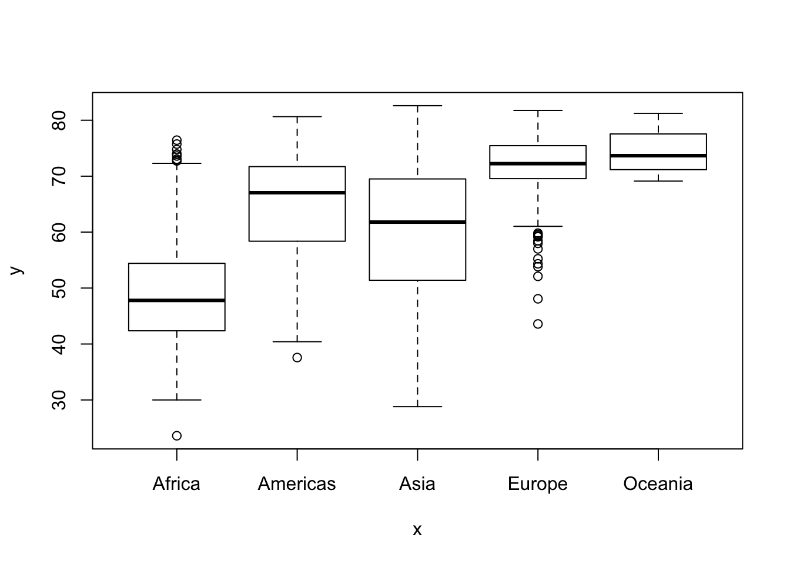

Chapter 1 Introduction to R and RStudio
R is the underlying statistical computing environment. You can think of this like the engine of a car. That makes RStudio like the dashboard.


RStudio is an integrated development environment (IDE) that allows us to interact with R. RStudio sits on top of R and makes writing and executing R code a lot easier. We’ll be benefiting from many of the added features that come with RStudio and we will point them out as we go.
1.1 Panes in RStudio
When you open RStudio, you will have access to R (there is no need to open R directly).
Now go to the top menu to open a new R Script File –> New File –> R Script
Great! Now you will see four panes
- I have mine set up as follows:
- Editor / script / source in the top left
- Console bottom left
- Environment/history on the top right
- Plots/help on the bottom right

Four pane layout in RStudio
On the top left is the script or editor window. This is where we are going to write all of our code.
On the lower left we have the console window. This is where R is running, and this is what you would see if you opened R instead of RStudio. In this pane we can see the code we send and then the answer.
The top right has the environment and history tabs. The Environment is a list of all objects that are saved in memory. The History tab shows all commands that have been run.
On the bottom right hand side there’s a window with Files … that’s your file structure in the working directory … Plots (SHOW PLOTS) … this is where your visualizations will appear … Packages (SHOW PACKAGES) … these are all of the installed packages …checked are loaded. unchecked aren’t … Help (show help) … help files are very important in R, you’ll spend a lot of time here … and Viewer for viewing other kinds of output, like web content
To change your preferences for the pane layout go to Tools –> Global Options –> Pane Layout. The Global Options menu is also where you can change the font size, background color, and other useful preferences.
There is one preference that we recommend you change right now. That is the soft wrap feature that will wrap long lines of code or comments onto several lines so that you do not need to scroll right to see the whole code or sentence. Go to Tools –> Global Options –> Code and click the box next to Soft Wrap R Source files
1.2 Set up Project and move dataset
I mentioned that RStudio has a lot of pretty handy features … one of those is the project structure
Before we can start writing code we need to set up our project workspace … go to File –> New Project–> New Directory. I will name mine IntroR and it will be a subfolder on my desktop

New R Project
When we start reading in data it will be important that the code and the data are in the same place. Creating a project creates an Rproj file that opens R running in that folder. If you are familiar with working directories, this process is setting the working directory for this project as this folder. This way, when you want to read in dataset whatever.txt, you just tell it the filename rather than a full path. This is critical for reproducibility, and we’ll talk about that more later
Now to get things arranged for later we need to download the dataset we are going to use. Right click to download the file to your computer.
Move the dataset to your IntroR directory. You can use whatever method you need. If you’re on a Mac there’s the finder. In Windows, use the file browser to move the gapminder.csv file into your R project directory
Now that we have a project and the dataset, let’s open up a new script and begin coding! Go to file new –> new R script
Code that you type into the console is code that R executes. From here forward we will use the editor window to write a script that we can save to a file and run it again whenever we want to. We usually give it a
.Rextension, but it’s just a plain text file so it can be opened by any text editor program.
1.3 Basic operations
R can be used as a calculator. Make sure you’re typing into into the editor, not the console. Use the run button in the top right of the script to run the code.
2+2## [1] 4Notice the output in the console that tells us the code we wrote and the answer. Let’s try some others.
5*4## [1] 202^3## [1] 8Instead of using the Run button to run code, let’s try the keyboard shortcut to run code. To send code from the editor to the console, use
CMD+Enter(Mac) orCtrl+Enter(Windows). This is way faster than using your mouse to hit the Run button each time.Go back to your code above and run them using the keyboard. We can also run multiple lines of code at once. Now highlight 2 lines of code and run them together.
1.5 Built-in Functions
R has built-in functions.
sqrt(144)## [1] 12log(1000)## [1] 6.907755When we computed that log you may or may not have noticed that it was the natural … base e … log … what if we wanted log base 10?
Let’s get help by typing a question mark in front of the function’s name, or
help(functionname):
help(log)
?log #same as above- So going through the help file we get our answer right away in the description section
log(1000)## [1] 6.907755log10(1000)## [1] 3log(1000, base=10)## [1] 3The
base=part inside the parentheses is called an argument, and most functions have arguments. Arguments modify the behavior of the function. Functions need some input (e.g., some data, an object) and arguments allow for options to change what the function will return, or how to treat the data provided.Note syntax highlighting when typing this into the editor. Also note that I explicity told the log function the name of the
baseargument … I didn’t have to do this…
log(1000,10)## [1] 3This also works just fine in this case… but it’s worth pointing out that explicility calling out argument names will be necessary in some cases and improves readability of your code.
Another note about this example … if we had paid a little more attention to the original call to the log function then we may not have had to dig into the help at all …
#log()- Check out the code suggestion … again with RStudio features … so RStudio tells us as we type the function name what parameters it accepts … pretty cool.
1.6 Nesting Functions
In some cases you may need to use one function to derive the value you need to pass to another function … if that sounds opaque maybe an example will help …
sqrt(log(1000,base=10))## [1] 1.732051Because sqrt() takes a number … and because log() outputs a number … we can nest the two together And if we really wanted to make this a little easier to look at … we could use the assignment operator to simplify things …
myval <- log(1000,base=10)
sqrt(myval)## [1] 1.732051EXERCISE 2
See ?abs and calculate the square root of the log-base-10 of the absolute value of -4*(2550-50). Answer should be 2.
sqrt(log(abs(-4*(2550-50)), base = 10))## [1] 21.7 Vectors
- We’ve talked quite a bit about objects … but we haven’t truly addressed the fact that there are many different kinds of objects
- Functions are one kind of object … like log() or sqrt()
- Another extremely common kind of object you’ll encounter in R is the vector …
- Vectors are single objects containing an ordered collection of elements
- A simple vector is a numeric vector … this is a single object containing more than one number
- A quick way to create a vector is to use the colon …
1:5## [1] 1 2 3 4 5We can also do arithmetic on vectors
1:5 + 6:10## [1] 7 9 11 13 15- As you can see … what’s happening is that each element of the vector is being paired with its equivalent during the operation … so 1 is added to 6, 2 is added to 7 … and so on until you have another vector representing the results of all 5 addition operations
- Besides the colon syntax … you can also use the c() function to create vectors
c(1,2,5)## [1] 1 2 5c(1:5,11:15)## [1] 1 2 3 4 5 11 12 13 14 15#What if we wanted to created a vector from to 2 to 200 by 4s?
?seq
seq(from = 2, to = 200, by = 4)## [1] 2 6 10 14 18 22 26 30 34 38 42 46 50 54 58 62 66
## [18] 70 74 78 82 86 90 94 98 102 106 110 114 118 122 126 130 134
## [35] 138 142 146 150 154 158 162 166 170 174 178 182 186 190 194 198You could assign this vector to an object … just like you would for one item Let’s try assigning a vector of animal weights to an object
animal_weights <- c(50,60,66)
animal_weights## [1] 50 60 66You can also create a vector that contains characters
animals <- c("mouse", "rat", "dog")
animals## [1] "mouse" "rat" "dog"There are a lot of functions that help you inspect a vector’s contents … length() is a good one … it’ll tell you how many elements are in a particular vector Let’s try it on animals and animal_weights
length(animals)## [1] 3length(animal_weights)## [1] 3Another helpful function is class() … this will tell you what kind of object you’re looking at
class(animals)## [1] "character"class(animal_weights)## [1] "numeric"This confirms that animals is a character vector and animal_weights is a numeric vector
The str() function … short for structure is particularly helpful … This function gives you an overview of the object you’re interested in
str(animal_weights)## num [1:3] 50 60 66str(animals)## chr [1:3] "mouse" "rat" "dog"There are no suprises in this case … but once we get to data frames and other more complex objects … we’ll see how useful str() can be
If you wanted to extend an existing vector by an additonal element or elements you can do so with combine
animal_weights <- c(animal_weights, 80)
animal_weights <- c(49, animal_weights)You can add elements to the beginning and end of a vector in this fashion
By reassigning the original vector each time we are overwriting its contents with the new data
We discussed classes a little while ago … certain functions only operate on particular classes of objects … for example sum will not work on characters
#sum(animals) errors out
sum(animal_weights)## [1] 3051.8 Indexing vectors
- As we definted them earlier, vectors are essentially single objects that contain multiple elements
- There may be situations where it’s important to be able to access individual elements from the vector
- Let’s create a vector of 50 integers from 101 to 150
x <- 101:150We can access certain elements by putting the index or indices we’re interested in in square brackets
x[1]## [1] 101That’s the first element … note that we didn’t start at 0 … R indexing differs from many programming languages in this sense
- We can also index a vector based on another vector
x[5:10]## [1] 105 106 107 108 109 110That’s the fifth through the tenth elements of x
x[c(40,48)]## [1] 140 148That’s the fortieth and forty-eighth
And if we call an index beyond the available data … R will return NA values
x[1:150]## [1] 101 102 103 104 105 106 107 108 109 110 111 112 113 114 115 116 117
## [18] 118 119 120 121 122 123 124 125 126 127 128 129 130 131 132 133 134
## [35] 135 136 137 138 139 140 141 142 143 144 145 146 147 148 149 150 NA
## [52] NA NA NA NA NA NA NA NA NA NA NA NA NA NA NA NA NA
## [69] NA NA NA NA NA NA NA NA NA NA NA NA NA NA NA NA NA
## [86] NA NA NA NA NA NA NA NA NA NA NA NA NA NA NA NA NA
## [103] NA NA NA NA NA NA NA NA NA NA NA NA NA NA NA NA NA
## [120] NA NA NA NA NA NA NA NA NA NA NA NA NA NA NA NA NA
## [137] NA NA NA NA NA NA NA NA NA NA NA NA NA NA1.9 Data Frames
Let’s move on to learning about data frames. There are lots of different basic data structures in R. If you take any kind of longer introduction to R you’ll probably learn about arrays, lists, matrices, etc. Let’s skip straight to the data structure you’ll probably use most – the data frame. We use data frames to store heterogeneous tabular data in R: tabular, meaning that individuals or observations are typically represented in rows, while variables or features are represented as columns; heterogeneous, meaning that columns/features/variables can be different classes (on variable, e.g. age, can be numeric, while another, e.g., cause of death, can be text).
1.10 Our data
- We have the gapminder.csv file loaded into our project directory … but we don’t actually know anything about it yet
- Let’s load it into R so we can start exploring it
- There are lots of ways to load data into R
- We can use the point-and-click RStudio menu and go to Tools > Import Data Set > Import From Text File … but that’s not reproducible …
- The better way to read data in for analysis is to do so as part of your script
There are functions in R to load many different kinds of data
We will use the basic read.csv() function today to load the gapminder.csv file … and because some spreadsheets have column names and some don’t … read.csv gives us the header option … in this case we want to set header = TRUE because the file does have column headers
gm <- read.csv("data/gapminder.csv")
# FYI if reading in as tibble, answer to plotting Exercise 5 will changeWe’ve named the gapminder dataset gm … and once it’s loaded we can look at it by typing gm
gmThat’s pretty ugly … printing large data sets can cause headaches Instead, let’s use the View function to look at the data. Note that this is a read only viewer - not like Excel where you can go in and change cell values etc. This feature helps with reproducibility.
View(gm)1.11 Inspecting Data frames
There are several built-in functions that are useful for working with data frames. Back to our script … we can confirm the object is a data frame by using class
class(gm)## [1] "data.frame"We can output abbreviated versions of the data frame with head and tail … by default these functions give us the first and last 6 rows respectively
head(gm)## country continent year lifeExp pop gdpPercap
## 1 Afghanistan Asia 1952 28.801 8425333 779.4453
## 2 Afghanistan Asia 1957 30.332 9240934 820.8530
## 3 Afghanistan Asia 1962 31.997 10267083 853.1007
## 4 Afghanistan Asia 1967 34.020 11537966 836.1971
## 5 Afghanistan Asia 1972 36.088 13079460 739.9811
## 6 Afghanistan Asia 1977 38.438 14880372 786.1134tail(gm)## country continent year lifeExp pop gdpPercap
## 1699 Zimbabwe Africa 1982 60.363 7636524 788.8550
## 1700 Zimbabwe Africa 1987 62.351 9216418 706.1573
## 1701 Zimbabwe Africa 1992 60.377 10704340 693.4208
## 1702 Zimbabwe Africa 1997 46.809 11404948 792.4500
## 1703 Zimbabwe Africa 2002 39.989 11926563 672.0386
## 1704 Zimbabwe Africa 2007 43.487 12311143 469.7093We can look at the number of rows and columns with dim(), just the number of rows with nrow() and just the number of columns with ncol()
dim(gm)## [1] 1704 6nrow(gm)## [1] 1704ncol(gm)## [1] 6names() will show us the column names
names(gm)## [1] "country" "continent" "year" "lifeExp" "pop" "gdpPercap"And probably the two you’ll use the most to inspect data frames … because they are the most descriptive … summary() and str()
summary(gm)## country continent year lifeExp
## Afghanistan: 12 Africa :624 Min. :1952 Min. :23.60
## Albania : 12 Americas:300 1st Qu.:1966 1st Qu.:48.20
## Algeria : 12 Asia :396 Median :1980 Median :60.71
## Angola : 12 Europe :360 Mean :1980 Mean :59.47
## Argentina : 12 Oceania : 24 3rd Qu.:1993 3rd Qu.:70.85
## Australia : 12 Max. :2007 Max. :82.60
## (Other) :1632
## pop gdpPercap
## Min. :6.001e+04 Min. : 241.2
## 1st Qu.:2.794e+06 1st Qu.: 1202.1
## Median :7.024e+06 Median : 3531.8
## Mean :2.960e+07 Mean : 7215.3
## 3rd Qu.:1.959e+07 3rd Qu.: 9325.5
## Max. :1.319e+09 Max. :113523.1
## str(gm)## 'data.frame': 1704 obs. of 6 variables:
## $ country : Factor w/ 142 levels "Afghanistan",..: 1 1 1 1 1 1 1 1 1 1 ...
## $ continent: Factor w/ 5 levels "Africa","Americas",..: 3 3 3 3 3 3 3 3 3 3 ...
## $ year : int 1952 1957 1962 1967 1972 1977 1982 1987 1992 1997 ...
## $ lifeExp : num 28.8 30.3 32 34 36.1 ...
## $ pop : int 8425333 9240934 10267083 11537966 13079460 14880372 12881816 13867957 16317921 22227415 ...
## $ gdpPercap: num 779 821 853 836 740 ...The structure tells us that gm has 1704 observations of 6 variables … it also gives us the variable names and what kinds of values they contain
1.12 Accessing variables & subsetting data frames
- You might have noticed a
$in front of the variable names in the str() output That symbol is how we access invidual variables … or columns … from a data frame
The syntax we want is dataframe$columnname
gm$pop- That gives us the population column
- If we wanted to perform some math on one of the columns in particular we could access it … then pass the result into a function
mean(gm$lifeExp)## [1] 59.47444- Two things worth noting here … the name of the variable is mixed case so we have to make sure we’re careful to match up the casing … RStudio does help us with this but it can still be tricky
-Secondly … this isn’t very interesting given that we’re looking at average life expectancy across all countries and all years in the data set
What if we wanted to look at average life expectancy for a particular subset of the data frame?
In other words … we might be interested in something like the life expectancy for a particular country, and how that changes over time … Or maybe the average life expectancy across all countries, separately for each year … Or maybe the average life expectancy for different continents.
EXERCISE 3
- What’s the standard deviation of the life expectancy (hint: get help on the
sdfunction with?sd) - What’s the mean population size in millions? (hint: divide by
1000000, or alternatively,1e6). - What’s the range of years represented in the data? (hint:
range()). - Run a correlation between life expectancy and GDP per capita (hint:
?cor())
1.13 Filtering a data frame
- Subsetting the data is pretty easy in R. There’s built-in function called subset
subset(gm, subset = year == 1982 & country == 'United States')## country continent year lifeExp pop gdpPercap
## 1615 United States Americas 1982 74.65 232187835 25009.56subset(gm, subset = pop < mean(gm$pop))## country continent year lifeExp pop gdpPercap
## 1 Afghanistan Asia 1952 28.801 8425333 779.4453
## 2 Afghanistan Asia 1957 30.332 9240934 820.8530
## 3 Afghanistan Asia 1962 31.997 10267083 853.1007
## 4 Afghanistan Asia 1967 34.020 11537966 836.1971
## 5 Afghanistan Asia 1972 36.088 13079460 739.9811
## 6 Afghanistan Asia 1977 38.438 14880372 786.1134
## 7 Afghanistan Asia 1982 39.854 12881816 978.0114
## 8 Afghanistan Asia 1987 40.822 13867957 852.3959
## 9 Afghanistan Asia 1992 41.674 16317921 649.3414
## 10 Afghanistan Asia 1997 41.763 22227415 635.3414
## 11 Afghanistan Asia 2002 42.129 25268405 726.7341
## 13 Albania Europe 1952 55.230 1282697 1601.0561
## 14 Albania Europe 1957 59.280 1476505 1942.2842
## 15 Albania Europe 1962 64.820 1728137 2312.8890
## 16 Albania Europe 1967 66.220 1984060 2760.1969
## 17 Albania Europe 1972 67.690 2263554 3313.4222
## 18 Albania Europe 1977 68.930 2509048 3533.0039
## 19 Albania Europe 1982 70.420 2780097 3630.8807
## 20 Albania Europe 1987 72.000 3075321 3738.9327
## 21 Albania Europe 1992 71.581 3326498 2497.4379
## 22 Albania Europe 1997 72.950 3428038 3193.0546
## 23 Albania Europe 2002 75.651 3508512 4604.2117
## 24 Albania Europe 2007 76.423 3600523 5937.0295
## 25 Algeria Africa 1952 43.077 9279525 2449.0082
## 26 Algeria Africa 1957 45.685 10270856 3013.9760
## 27 Algeria Africa 1962 48.303 11000948 2550.8169
## 28 Algeria Africa 1967 51.407 12760499 3246.9918
## 29 Algeria Africa 1972 54.518 14760787 4182.6638
## 30 Algeria Africa 1977 58.014 17152804 4910.4168
## 31 Algeria Africa 1982 61.368 20033753 5745.1602
## 32 Algeria Africa 1987 65.799 23254956 5681.3585
## 33 Algeria Africa 1992 67.744 26298373 5023.2166
## 34 Algeria Africa 1997 69.152 29072015 4797.2951
## 37 Angola Africa 1952 30.015 4232095 3520.6103
## 38 Angola Africa 1957 31.999 4561361 3827.9405
## 39 Angola Africa 1962 34.000 4826015 4269.2767
## 40 Angola Africa 1967 35.985 5247469 5522.7764
## 41 Angola Africa 1972 37.928 5894858 5473.2880
## 42 Angola Africa 1977 39.483 6162675 3008.6474
## 43 Angola Africa 1982 39.942 7016384 2756.9537
## 44 Angola Africa 1987 39.906 7874230 2430.2083
## 45 Angola Africa 1992 40.647 8735988 2627.8457
## 46 Angola Africa 1997 40.963 9875024 2277.1409
## 47 Angola Africa 2002 41.003 10866106 2773.2873
## 48 Angola Africa 2007 42.731 12420476 4797.2313
## 49 Argentina Americas 1952 62.485 17876956 5911.3151
## 50 Argentina Americas 1957 64.399 19610538 6856.8562
## 51 Argentina Americas 1962 65.142 21283783 7133.1660
## 52 Argentina Americas 1967 65.634 22934225 8052.9530
## 53 Argentina Americas 1972 67.065 24779799 9443.0385
## 54 Argentina Americas 1977 68.481 26983828 10079.0267
## 55 Argentina Americas 1982 69.942 29341374 8997.8974
## 61 Australia Oceania 1952 69.120 8691212 10039.5956
## 62 Australia Oceania 1957 70.330 9712569 10949.6496
## 63 Australia Oceania 1962 70.930 10794968 12217.2269
## 64 Australia Oceania 1967 71.100 11872264 14526.1246
## 65 Australia Oceania 1972 71.930 13177000 16788.6295
## 66 Australia Oceania 1977 73.490 14074100 18334.1975
## 67 Australia Oceania 1982 74.740 15184200 19477.0093
## 68 Australia Oceania 1987 76.320 16257249 21888.8890
## 69 Australia Oceania 1992 77.560 17481977 23424.7668
## 70 Australia Oceania 1997 78.830 18565243 26997.9366
## 71 Australia Oceania 2002 80.370 19546792 30687.7547
## 72 Australia Oceania 2007 81.235 20434176 34435.3674
## 73 Austria Europe 1952 66.800 6927772 6137.0765
## 74 Austria Europe 1957 67.480 6965860 8842.5980
## 75 Austria Europe 1962 69.540 7129864 10750.7211
## 76 Austria Europe 1967 70.140 7376998 12834.6024
## 77 Austria Europe 1972 70.630 7544201 16661.6256
## 78 Austria Europe 1977 72.170 7568430 19749.4223
## 79 Austria Europe 1982 73.180 7574613 21597.0836
## 80 Austria Europe 1987 74.940 7578903 23687.8261
## 81 Austria Europe 1992 76.040 7914969 27042.0187
## 82 Austria Europe 1997 77.510 8069876 29095.9207
## 83 Austria Europe 2002 78.980 8148312 32417.6077
## 84 Austria Europe 2007 79.829 8199783 36126.4927
## 85 Bahrain Asia 1952 50.939 120447 9867.0848
## 86 Bahrain Asia 1957 53.832 138655 11635.7995
## 87 Bahrain Asia 1962 56.923 171863 12753.2751
## 88 Bahrain Asia 1967 59.923 202182 14804.6727
## 89 Bahrain Asia 1972 63.300 230800 18268.6584
## 90 Bahrain Asia 1977 65.593 297410 19340.1020
## 91 Bahrain Asia 1982 69.052 377967 19211.1473
## 92 Bahrain Asia 1987 70.750 454612 18524.0241
## 93 Bahrain Asia 1992 72.601 529491 19035.5792
## 94 Bahrain Asia 1997 73.925 598561 20292.0168
## 95 Bahrain Asia 2002 74.795 656397 23403.5593
## 96 Bahrain Asia 2007 75.635 708573 29796.0483
## 109 Belgium Europe 1952 68.000 8730405 8343.1051
## 110 Belgium Europe 1957 69.240 8989111 9714.9606
## 111 Belgium Europe 1962 70.250 9218400 10991.2068
## 112 Belgium Europe 1967 70.940 9556500 13149.0412
## 113 Belgium Europe 1972 71.440 9709100 16672.1436
## 114 Belgium Europe 1977 72.800 9821800 19117.9745
## 115 Belgium Europe 1982 73.930 9856303 20979.8459
## 116 Belgium Europe 1987 75.350 9870200 22525.5631
## 117 Belgium Europe 1992 76.460 10045622 25575.5707
## 118 Belgium Europe 1997 77.530 10199787 27561.1966
## 119 Belgium Europe 2002 78.320 10311970 30485.8838
## 120 Belgium Europe 2007 79.441 10392226 33692.6051
## 121 Benin Africa 1952 38.223 1738315 1062.7522
## 122 Benin Africa 1957 40.358 1925173 959.6011
## 123 Benin Africa 1962 42.618 2151895 949.4991
## 124 Benin Africa 1967 44.885 2427334 1035.8314
## 125 Benin Africa 1972 47.014 2761407 1085.7969
## 126 Benin Africa 1977 49.190 3168267 1029.1613
## 127 Benin Africa 1982 50.904 3641603 1277.8976
## 128 Benin Africa 1987 52.337 4243788 1225.8560
## 129 Benin Africa 1992 53.919 4981671 1191.2077
## 130 Benin Africa 1997 54.777 6066080 1232.9753
## 131 Benin Africa 2002 54.406 7026113 1372.8779
## 132 Benin Africa 2007 56.728 8078314 1441.2849
## 133 Bolivia Americas 1952 40.414 2883315 2677.3263
## 134 Bolivia Americas 1957 41.890 3211738 2127.6863
## 135 Bolivia Americas 1962 43.428 3593918 2180.9725
## 136 Bolivia Americas 1967 45.032 4040665 2586.8861
## 137 Bolivia Americas 1972 46.714 4565872 2980.3313
## 138 Bolivia Americas 1977 50.023 5079716 3548.0978
## 139 Bolivia Americas 1982 53.859 5642224 3156.5105
## 140 Bolivia Americas 1987 57.251 6156369 2753.6915
## 141 Bolivia Americas 1992 59.957 6893451 2961.6997
## 142 Bolivia Americas 1997 62.050 7693188 3326.1432
## 143 Bolivia Americas 2002 63.883 8445134 3413.2627
## 144 Bolivia Americas 2007 65.554 9119152 3822.1371
## 145 Bosnia and Herzegovina Europe 1952 53.820 2791000 973.5332
## 146 Bosnia and Herzegovina Europe 1957 58.450 3076000 1353.9892
## 147 Bosnia and Herzegovina Europe 1962 61.930 3349000 1709.6837
## 148 Bosnia and Herzegovina Europe 1967 64.790 3585000 2172.3524
## 149 Bosnia and Herzegovina Europe 1972 67.450 3819000 2860.1698
## 150 Bosnia and Herzegovina Europe 1977 69.860 4086000 3528.4813
## 151 Bosnia and Herzegovina Europe 1982 70.690 4172693 4126.6132
## 152 Bosnia and Herzegovina Europe 1987 71.140 4338977 4314.1148
## 153 Bosnia and Herzegovina Europe 1992 72.178 4256013 2546.7814
## 154 Bosnia and Herzegovina Europe 1997 73.244 3607000 4766.3559
## 155 Bosnia and Herzegovina Europe 2002 74.090 4165416 6018.9752
## 156 Bosnia and Herzegovina Europe 2007 74.852 4552198 7446.2988
## 157 Botswana Africa 1952 47.622 442308 851.2411
## 158 Botswana Africa 1957 49.618 474639 918.2325
## 159 Botswana Africa 1962 51.520 512764 983.6540
## 160 Botswana Africa 1967 53.298 553541 1214.7093
## 161 Botswana Africa 1972 56.024 619351 2263.6111
## 162 Botswana Africa 1977 59.319 781472 3214.8578
## 163 Botswana Africa 1982 61.484 970347 4551.1421
## 164 Botswana Africa 1987 63.622 1151184 6205.8839
## 165 Botswana Africa 1992 62.745 1342614 7954.1116
## 166 Botswana Africa 1997 52.556 1536536 8647.1423
## 167 Botswana Africa 2002 46.634 1630347 11003.6051
## 168 Botswana Africa 2007 50.728 1639131 12569.8518
## 181 Bulgaria Europe 1952 59.600 7274900 2444.2866
## 182 Bulgaria Europe 1957 66.610 7651254 3008.6707
## 183 Bulgaria Europe 1962 69.510 8012946 4254.3378
## 184 Bulgaria Europe 1967 70.420 8310226 5577.0028
## 185 Bulgaria Europe 1972 70.900 8576200 6597.4944
## 186 Bulgaria Europe 1977 70.810 8797022 7612.2404
## 187 Bulgaria Europe 1982 71.080 8892098 8224.1916
## 188 Bulgaria Europe 1987 71.340 8971958 8239.8548
## 189 Bulgaria Europe 1992 71.190 8658506 6302.6234
## 190 Bulgaria Europe 1997 70.320 8066057 5970.3888
## 191 Bulgaria Europe 2002 72.140 7661799 7696.7777
## 192 Bulgaria Europe 2007 73.005 7322858 10680.7928
## 193 Burkina Faso Africa 1952 31.975 4469979 543.2552
## 194 Burkina Faso Africa 1957 34.906 4713416 617.1835
## 195 Burkina Faso Africa 1962 37.814 4919632 722.5120
## 196 Burkina Faso Africa 1967 40.697 5127935 794.8266
## 197 Burkina Faso Africa 1972 43.591 5433886 854.7360
## 198 Burkina Faso Africa 1977 46.137 5889574 743.3870
## 199 Burkina Faso Africa 1982 48.122 6634596 807.1986
## 200 Burkina Faso Africa 1987 49.557 7586551 912.0631
## 201 Burkina Faso Africa 1992 50.260 8878303 931.7528
## 202 Burkina Faso Africa 1997 50.324 10352843 946.2950
## 203 Burkina Faso Africa 2002 50.650 12251209 1037.6452
## 204 Burkina Faso Africa 2007 52.295 14326203 1217.0330
## 205 Burundi Africa 1952 39.031 2445618 339.2965
## 206 Burundi Africa 1957 40.533 2667518 379.5646
## 207 Burundi Africa 1962 42.045 2961915 355.2032
## 208 Burundi Africa 1967 43.548 3330989 412.9775
## 209 Burundi Africa 1972 44.057 3529983 464.0995
## 210 Burundi Africa 1977 45.910 3834415 556.1033
## 211 Burundi Africa 1982 47.471 4580410 559.6032
## 212 Burundi Africa 1987 48.211 5126023 621.8188
## 213 Burundi Africa 1992 44.736 5809236 631.6999
## 214 Burundi Africa 1997 45.326 6121610 463.1151
## 215 Burundi Africa 2002 47.360 7021078 446.4035
## 216 Burundi Africa 2007 49.580 8390505 430.0707
## 217 Cambodia Asia 1952 39.417 4693836 368.4693
## 218 Cambodia Asia 1957 41.366 5322536 434.0383
## 219 Cambodia Asia 1962 43.415 6083619 496.9136
## 220 Cambodia Asia 1967 45.415 6960067 523.4323
## 221 Cambodia Asia 1972 40.317 7450606 421.6240
## 222 Cambodia Asia 1977 31.220 6978607 524.9722
## 223 Cambodia Asia 1982 50.957 7272485 624.4755
## 224 Cambodia Asia 1987 53.914 8371791 683.8956
## 225 Cambodia Asia 1992 55.803 10150094 682.3032
## 226 Cambodia Asia 1997 56.534 11782962 734.2852
## 227 Cambodia Asia 2002 56.752 12926707 896.2260
## 228 Cambodia Asia 2007 59.723 14131858 1713.7787
## 229 Cameroon Africa 1952 38.523 5009067 1172.6677
## 230 Cameroon Africa 1957 40.428 5359923 1313.0481
## 231 Cameroon Africa 1962 42.643 5793633 1399.6074
## 232 Cameroon Africa 1967 44.799 6335506 1508.4531
## 233 Cameroon Africa 1972 47.049 7021028 1684.1465
## 234 Cameroon Africa 1977 49.355 7959865 1783.4329
## 235 Cameroon Africa 1982 52.961 9250831 2367.9833
## 236 Cameroon Africa 1987 54.985 10780667 2602.6642
## 237 Cameroon Africa 1992 54.314 12467171 1793.1633
## 238 Cameroon Africa 1997 52.199 14195809 1694.3375
## 239 Cameroon Africa 2002 49.856 15929988 1934.0114
## 240 Cameroon Africa 2007 50.430 17696293 2042.0952
## 241 Canada Americas 1952 68.750 14785584 11367.1611
## 242 Canada Americas 1957 69.960 17010154 12489.9501
## 243 Canada Americas 1962 71.300 18985849 13462.4855
## 244 Canada Americas 1967 72.130 20819767 16076.5880
## 245 Canada Americas 1972 72.880 22284500 18970.5709
## 246 Canada Americas 1977 74.210 23796400 22090.8831
## 247 Canada Americas 1982 75.760 25201900 22898.7921
## 248 Canada Americas 1987 76.860 26549700 26626.5150
## 249 Canada Americas 1992 77.950 28523502 26342.8843
## 253 Central African Republic Africa 1952 35.463 1291695 1071.3107
## 254 Central African Republic Africa 1957 37.464 1392284 1190.8443
## 255 Central African Republic Africa 1962 39.475 1523478 1193.0688
## 256 Central African Republic Africa 1967 41.478 1733638 1136.0566
## 257 Central African Republic Africa 1972 43.457 1927260 1070.0133
## 258 Central African Republic Africa 1977 46.775 2167533 1109.3743
## 259 Central African Republic Africa 1982 48.295 2476971 956.7530
## 260 Central African Republic Africa 1987 50.485 2840009 844.8764
## 261 Central African Republic Africa 1992 49.396 3265124 747.9055
## 262 Central African Republic Africa 1997 46.066 3696513 740.5063
## 263 Central African Republic Africa 2002 43.308 4048013 738.6906
## 264 Central African Republic Africa 2007 44.741 4369038 706.0165
## 265 Chad Africa 1952 38.092 2682462 1178.6659
## 266 Chad Africa 1957 39.881 2894855 1308.4956
## 267 Chad Africa 1962 41.716 3150417 1389.8176
## 268 Chad Africa 1967 43.601 3495967 1196.8106
## 269 Chad Africa 1972 45.569 3899068 1104.1040
## 270 Chad Africa 1977 47.383 4388260 1133.9850
## 271 Chad Africa 1982 49.517 4875118 797.9081
## 272 Chad Africa 1987 51.051 5498955 952.3861
## 273 Chad Africa 1992 51.724 6429417 1058.0643
## 274 Chad Africa 1997 51.573 7562011 1004.9614
## 275 Chad Africa 2002 50.525 8835739 1156.1819
## 276 Chad Africa 2007 50.651 10238807 1704.0637
## 277 Chile Americas 1952 54.745 6377619 3939.9788
## 278 Chile Americas 1957 56.074 7048426 4315.6227
## 279 Chile Americas 1962 57.924 7961258 4519.0943
## 280 Chile Americas 1967 60.523 8858908 5106.6543
## 281 Chile Americas 1972 63.441 9717524 5494.0244
## 282 Chile Americas 1977 67.052 10599793 4756.7638
## 283 Chile Americas 1982 70.565 11487112 5095.6657
## 284 Chile Americas 1987 72.492 12463354 5547.0638
## 285 Chile Americas 1992 74.126 13572994 7596.1260
## 286 Chile Americas 1997 75.816 14599929 10118.0532
## 287 Chile Americas 2002 77.860 15497046 10778.7838
## 288 Chile Americas 2007 78.553 16284741 13171.6388
## 301 Colombia Americas 1952 50.643 12350771 2144.1151
## 302 Colombia Americas 1957 55.118 14485993 2323.8056
## 303 Colombia Americas 1962 57.863 17009885 2492.3511
## 304 Colombia Americas 1967 59.963 19764027 2678.7298
## 305 Colombia Americas 1972 61.623 22542890 3264.6600
## 306 Colombia Americas 1977 63.837 25094412 3815.8079
## 307 Colombia Americas 1982 66.653 27764644 4397.5757
## 313 Comoros Africa 1952 40.715 153936 1102.9909
## 314 Comoros Africa 1957 42.460 170928 1211.1485
## 315 Comoros Africa 1962 44.467 191689 1406.6483
## 316 Comoros Africa 1967 46.472 217378 1876.0296
## 317 Comoros Africa 1972 48.944 250027 1937.5777
## 318 Comoros Africa 1977 50.939 304739 1172.6030
## 319 Comoros Africa 1982 52.933 348643 1267.1001
## 320 Comoros Africa 1987 54.926 395114 1315.9808
## 321 Comoros Africa 1992 57.939 454429 1246.9074
## 322 Comoros Africa 1997 60.660 527982 1173.6182
## 323 Comoros Africa 2002 62.974 614382 1075.8116
## 324 Comoros Africa 2007 65.152 710960 986.1479
## 325 Congo, Dem. Rep. Africa 1952 39.143 14100005 780.5423
## 326 Congo, Dem. Rep. Africa 1957 40.652 15577932 905.8602
## 327 Congo, Dem. Rep. Africa 1962 42.122 17486434 896.3146
## 328 Congo, Dem. Rep. Africa 1967 44.056 19941073 861.5932
## 329 Congo, Dem. Rep. Africa 1972 45.989 23007669 904.8961
## 330 Congo, Dem. Rep. Africa 1977 47.804 26480870 795.7573
## 337 Congo, Rep. Africa 1952 42.111 854885 2125.6214
## 338 Congo, Rep. Africa 1957 45.053 940458 2315.0566
## 339 Congo, Rep. Africa 1962 48.435 1047924 2464.7832
## 340 Congo, Rep. Africa 1967 52.040 1179760 2677.9396
## 341 Congo, Rep. Africa 1972 54.907 1340458 3213.1527
## 342 Congo, Rep. Africa 1977 55.625 1536769 3259.1790
## 343 Congo, Rep. Africa 1982 56.695 1774735 4879.5075
## 344 Congo, Rep. Africa 1987 57.470 2064095 4201.1949
## 345 Congo, Rep. Africa 1992 56.433 2409073 4016.2395
## 346 Congo, Rep. Africa 1997 52.962 2800947 3484.1644
## 347 Congo, Rep. Africa 2002 52.970 3328795 3484.0620
## 348 Congo, Rep. Africa 2007 55.322 3800610 3632.5578
## 349 Costa Rica Americas 1952 57.206 926317 2627.0095
## 350 Costa Rica Americas 1957 60.026 1112300 2990.0108
## 351 Costa Rica Americas 1962 62.842 1345187 3460.9370
## 352 Costa Rica Americas 1967 65.424 1588717 4161.7278
## 353 Costa Rica Americas 1972 67.849 1834796 5118.1469
## 354 Costa Rica Americas 1977 70.750 2108457 5926.8770
## 355 Costa Rica Americas 1982 73.450 2424367 5262.7348
## 356 Costa Rica Americas 1987 74.752 2799811 5629.9153
## 357 Costa Rica Americas 1992 75.713 3173216 6160.4163
## 358 Costa Rica Americas 1997 77.260 3518107 6677.0453
## 359 Costa Rica Americas 2002 78.123 3834934 7723.4472
## 360 Costa Rica Americas 2007 78.782 4133884 9645.0614
## 361 Cote d'Ivoire Africa 1952 40.477 2977019 1388.5947
## 362 Cote d'Ivoire Africa 1957 42.469 3300000 1500.8959
## 363 Cote d'Ivoire Africa 1962 44.930 3832408 1728.8694
## 364 Cote d'Ivoire Africa 1967 47.350 4744870 2052.0505
## 365 Cote d'Ivoire Africa 1972 49.801 6071696 2378.2011
## 366 Cote d'Ivoire Africa 1977 52.374 7459574 2517.7365
## 367 Cote d'Ivoire Africa 1982 53.983 9025951 2602.7102
## 368 Cote d'Ivoire Africa 1987 54.655 10761098 2156.9561
## 369 Cote d'Ivoire Africa 1992 52.044 12772596 1648.0738
## 370 Cote d'Ivoire Africa 1997 47.991 14625967 1786.2654
## 371 Cote d'Ivoire Africa 2002 46.832 16252726 1648.8008
## 372 Cote d'Ivoire Africa 2007 48.328 18013409 1544.7501
## 373 Croatia Europe 1952 61.210 3882229 3119.2365
## 374 Croatia Europe 1957 64.770 3991242 4338.2316
## 375 Croatia Europe 1962 67.130 4076557 5477.8900
## 376 Croatia Europe 1967 68.500 4174366 6960.2979
## 377 Croatia Europe 1972 69.610 4225310 9164.0901
## 378 Croatia Europe 1977 70.640 4318673 11305.3852
## 379 Croatia Europe 1982 70.460 4413368 13221.8218
## 380 Croatia Europe 1987 71.520 4484310 13822.5839
## 381 Croatia Europe 1992 72.527 4494013 8447.7949
## 382 Croatia Europe 1997 73.680 4444595 9875.6045
## 383 Croatia Europe 2002 74.876 4481020 11628.3890
## 384 Croatia Europe 2007 75.748 4493312 14619.2227
## 385 Cuba Americas 1952 59.421 6007797 5586.5388
## 386 Cuba Americas 1957 62.325 6640752 6092.1744
## 387 Cuba Americas 1962 65.246 7254373 5180.7559
## 388 Cuba Americas 1967 68.290 8139332 5690.2680
## 389 Cuba Americas 1972 70.723 8831348 5305.4453
## 390 Cuba Americas 1977 72.649 9537988 6380.4950
## 391 Cuba Americas 1982 73.717 9789224 7316.9181
## 392 Cuba Americas 1987 74.174 10239839 7532.9248
## 393 Cuba Americas 1992 74.414 10723260 5592.8440
## 394 Cuba Americas 1997 76.151 10983007 5431.9904
## 395 Cuba Americas 2002 77.158 11226999 6340.6467
## 396 Cuba Americas 2007 78.273 11416987 8948.1029
## 397 Czech Republic Europe 1952 66.870 9125183 6876.1403
## 398 Czech Republic Europe 1957 69.030 9513758 8256.3439
## 399 Czech Republic Europe 1962 69.900 9620282 10136.8671
## 400 Czech Republic Europe 1967 70.380 9835109 11399.4449
## 401 Czech Republic Europe 1972 70.290 9862158 13108.4536
## 402 Czech Republic Europe 1977 70.710 10161915 14800.1606
## 403 Czech Republic Europe 1982 70.960 10303704 15377.2285
## 404 Czech Republic Europe 1987 71.580 10311597 16310.4434
## 405 Czech Republic Europe 1992 72.400 10315702 14297.0212
## 406 Czech Republic Europe 1997 74.010 10300707 16048.5142
## 407 Czech Republic Europe 2002 75.510 10256295 17596.2102
## 408 Czech Republic Europe 2007 76.486 10228744 22833.3085
## 409 Denmark Europe 1952 70.780 4334000 9692.3852
## 410 Denmark Europe 1957 71.810 4487831 11099.6593
## 411 Denmark Europe 1962 72.350 4646899 13583.3135
## 412 Denmark Europe 1967 72.960 4838800 15937.2112
## 413 Denmark Europe 1972 73.470 4991596 18866.2072
## 414 Denmark Europe 1977 74.690 5088419 20422.9015
## 415 Denmark Europe 1982 74.630 5117810 21688.0405
## 416 Denmark Europe 1987 74.800 5127024 25116.1758
## 417 Denmark Europe 1992 75.330 5171393 26406.7399
## 418 Denmark Europe 1997 76.110 5283663 29804.3457
## 419 Denmark Europe 2002 77.180 5374693 32166.5001
## 420 Denmark Europe 2007 78.332 5468120 35278.4187
## 421 Djibouti Africa 1952 34.812 63149 2669.5295
## 422 Djibouti Africa 1957 37.328 71851 2864.9691
## 423 Djibouti Africa 1962 39.693 89898 3020.9893
## 424 Djibouti Africa 1967 42.074 127617 3020.0505
## 425 Djibouti Africa 1972 44.366 178848 3694.2124
## 426 Djibouti Africa 1977 46.519 228694 3081.7610
## 427 Djibouti Africa 1982 48.812 305991 2879.4681
## 428 Djibouti Africa 1987 50.040 311025 2880.1026
## 429 Djibouti Africa 1992 51.604 384156 2377.1562
## 430 Djibouti Africa 1997 53.157 417908 1895.0170
## 431 Djibouti Africa 2002 53.373 447416 1908.2609
## 432 Djibouti Africa 2007 54.791 496374 2082.4816
## 433 Dominican Republic Americas 1952 45.928 2491346 1397.7171
## 434 Dominican Republic Americas 1957 49.828 2923186 1544.4030
## 435 Dominican Republic Americas 1962 53.459 3453434 1662.1374
## 436 Dominican Republic Americas 1967 56.751 4049146 1653.7230
## 437 Dominican Republic Americas 1972 59.631 4671329 2189.8745
## 438 Dominican Republic Americas 1977 61.788 5302800 2681.9889
## 439 Dominican Republic Americas 1982 63.727 5968349 2861.0924
## 440 Dominican Republic Americas 1987 66.046 6655297 2899.8422
## 441 Dominican Republic Americas 1992 68.457 7351181 3044.2142
## 442 Dominican Republic Americas 1997 69.957 7992357 3614.1013
## 443 Dominican Republic Americas 2002 70.847 8650322 4563.8082
## 444 Dominican Republic Americas 2007 72.235 9319622 6025.3748
## 445 Ecuador Americas 1952 48.357 3548753 3522.1107
## 446 Ecuador Americas 1957 51.356 4058385 3780.5467
## 447 Ecuador Americas 1962 54.640 4681707 4086.1141
## 448 Ecuador Americas 1967 56.678 5432424 4579.0742
## 449 Ecuador Americas 1972 58.796 6298651 5280.9947
## 450 Ecuador Americas 1977 61.310 7278866 6679.6233
## 451 Ecuador Americas 1982 64.342 8365850 7213.7913
## 452 Ecuador Americas 1987 67.231 9545158 6481.7770
## 453 Ecuador Americas 1992 69.613 10748394 7103.7026
## 454 Ecuador Americas 1997 72.312 11911819 7429.4559
## 455 Ecuador Americas 2002 74.173 12921234 5773.0445
## 456 Ecuador Americas 2007 74.994 13755680 6873.2623
## 457 Egypt Africa 1952 41.893 22223309 1418.8224
## 458 Egypt Africa 1957 44.444 25009741 1458.9153
## 459 Egypt Africa 1962 46.992 28173309 1693.3359
## 469 El Salvador Americas 1952 45.262 2042865 3048.3029
## 470 El Salvador Americas 1957 48.570 2355805 3421.5232
## 471 El Salvador Americas 1962 52.307 2747687 3776.8036
## 472 El Salvador Americas 1967 55.855 3232927 4358.5954
## 473 El Salvador Americas 1972 58.207 3790903 4520.2460
## 474 El Salvador Americas 1977 56.696 4282586 5138.9224
## 475 El Salvador Americas 1982 56.604 4474873 4098.3442
## 476 El Salvador Americas 1987 63.154 4842194 4140.4421
## 477 El Salvador Americas 1992 66.798 5274649 4444.2317
## 478 El Salvador Americas 1997 69.535 5783439 5154.8255
## 479 El Salvador Americas 2002 70.734 6353681 5351.5687
## 480 El Salvador Americas 2007 71.878 6939688 5728.3535
## 481 Equatorial Guinea Africa 1952 34.482 216964 375.6431
## 482 Equatorial Guinea Africa 1957 35.983 232922 426.0964
## 483 Equatorial Guinea Africa 1962 37.485 249220 582.8420
## 484 Equatorial Guinea Africa 1967 38.987 259864 915.5960
## 485 Equatorial Guinea Africa 1972 40.516 277603 672.4123
## 486 Equatorial Guinea Africa 1977 42.024 192675 958.5668
## 487 Equatorial Guinea Africa 1982 43.662 285483 927.8253
## 488 Equatorial Guinea Africa 1987 45.664 341244 966.8968
## 489 Equatorial Guinea Africa 1992 47.545 387838 1132.0550
## 490 Equatorial Guinea Africa 1997 48.245 439971 2814.4808
## 491 Equatorial Guinea Africa 2002 49.348 495627 7703.4959
## 492 Equatorial Guinea Africa 2007 51.579 551201 12154.0897
## 493 Eritrea Africa 1952 35.928 1438760 328.9406
## 494 Eritrea Africa 1957 38.047 1542611 344.1619
## 495 Eritrea Africa 1962 40.158 1666618 380.9958
## 496 Eritrea Africa 1967 42.189 1820319 468.7950
## 497 Eritrea Africa 1972 44.142 2260187 514.3242
## 498 Eritrea Africa 1977 44.535 2512642 505.7538
## 499 Eritrea Africa 1982 43.890 2637297 524.8758
## 500 Eritrea Africa 1987 46.453 2915959 521.1341
## 501 Eritrea Africa 1992 49.991 3668440 582.8585
## 502 Eritrea Africa 1997 53.378 4058319 913.4708
## 503 Eritrea Africa 2002 55.240 4414865 765.3500
## 504 Eritrea Africa 2007 58.040 4906585 641.3695
## 505 Ethiopia Africa 1952 34.078 20860941 362.1463
## 506 Ethiopia Africa 1957 36.667 22815614 378.9042
## 507 Ethiopia Africa 1962 40.059 25145372 419.4564
## 508 Ethiopia Africa 1967 42.115 27860297 516.1186
## 517 Finland Europe 1952 66.550 4090500 6424.5191
## 518 Finland Europe 1957 67.490 4324000 7545.4154
## 519 Finland Europe 1962 68.750 4491443 9371.8426
## 520 Finland Europe 1967 69.830 4605744 10921.6363
## 521 Finland Europe 1972 70.870 4639657 14358.8759
## 522 Finland Europe 1977 72.520 4738902 15605.4228
## 523 Finland Europe 1982 74.550 4826933 18533.1576
## 524 Finland Europe 1987 74.830 4931729 21141.0122
## 525 Finland Europe 1992 75.700 5041039 20647.1650
## 526 Finland Europe 1997 77.130 5134406 23723.9502
## 527 Finland Europe 2002 78.370 5193039 28204.5906
## 528 Finland Europe 2007 79.313 5238460 33207.0844
## 541 Gabon Africa 1952 37.003 420702 4293.4765
## 542 Gabon Africa 1957 38.999 434904 4976.1981
## 543 Gabon Africa 1962 40.489 455661 6631.4592
## 544 Gabon Africa 1967 44.598 489004 8358.7620
## 545 Gabon Africa 1972 48.690 537977 11401.9484
## 546 Gabon Africa 1977 52.790 706367 21745.5733
## 547 Gabon Africa 1982 56.564 753874 15113.3619
## 548 Gabon Africa 1987 60.190 880397 11864.4084
## 549 Gabon Africa 1992 61.366 985739 13522.1575
## 550 Gabon Africa 1997 60.461 1126189 14722.8419
## 551 Gabon Africa 2002 56.761 1299304 12521.7139
## 552 Gabon Africa 2007 56.735 1454867 13206.4845
## 553 Gambia Africa 1952 30.000 284320 485.2307
## 554 Gambia Africa 1957 32.065 323150 520.9267
## 555 Gambia Africa 1962 33.896 374020 599.6503
## 556 Gambia Africa 1967 35.857 439593 734.7829
## 557 Gambia Africa 1972 38.308 517101 756.0868
## 558 Gambia Africa 1977 41.842 608274 884.7553
## 559 Gambia Africa 1982 45.580 715523 835.8096
## 560 Gambia Africa 1987 49.265 848406 611.6589
## 561 Gambia Africa 1992 52.644 1025384 665.6244
## 562 Gambia Africa 1997 55.861 1235767 653.7302
## 563 Gambia Africa 2002 58.041 1457766 660.5856
## 564 Gambia Africa 2007 59.448 1688359 752.7497
## 577 Ghana Africa 1952 43.149 5581001 911.2989
## 578 Ghana Africa 1957 44.779 6391288 1043.5615
## 579 Ghana Africa 1962 46.452 7355248 1190.0411
## 580 Ghana Africa 1967 48.072 8490213 1125.6972
## 581 Ghana Africa 1972 49.875 9354120 1178.2237
## 582 Ghana Africa 1977 51.756 10538093 993.2240
## 583 Ghana Africa 1982 53.744 11400338 876.0326
## 584 Ghana Africa 1987 55.729 14168101 847.0061
## 585 Ghana Africa 1992 57.501 16278738 925.0602
## 586 Ghana Africa 1997 58.556 18418288 1005.2458
## 587 Ghana Africa 2002 58.453 20550751 1111.9846
## 588 Ghana Africa 2007 60.022 22873338 1327.6089
## 589 Greece Europe 1952 65.860 7733250 3530.6901
## 590 Greece Europe 1957 67.860 8096218 4916.2999
## 591 Greece Europe 1962 69.510 8448233 6017.1907
## 592 Greece Europe 1967 71.000 8716441 8513.0970
## 593 Greece Europe 1972 72.340 8888628 12724.8296
## 594 Greece Europe 1977 73.680 9308479 14195.5243
## 595 Greece Europe 1982 75.240 9786480 15268.4209
## 596 Greece Europe 1987 76.670 9974490 16120.5284
## 597 Greece Europe 1992 77.030 10325429 17541.4963
## 598 Greece Europe 1997 77.869 10502372 18747.6981
## 599 Greece Europe 2002 78.256 10603863 22514.2548
## 600 Greece Europe 2007 79.483 10706290 27538.4119
## 601 Guatemala Americas 1952 42.023 3146381 2428.2378
## 602 Guatemala Americas 1957 44.142 3640876 2617.1560
## 603 Guatemala Americas 1962 46.954 4208858 2750.3644
## 604 Guatemala Americas 1967 50.016 4690773 3242.5311
## 605 Guatemala Americas 1972 53.738 5149581 4031.4083
## 606 Guatemala Americas 1977 56.029 5703430 4879.9927
## 607 Guatemala Americas 1982 58.137 6395630 4820.4948
## 608 Guatemala Americas 1987 60.782 7326406 4246.4860
## 609 Guatemala Americas 1992 63.373 8486949 4439.4508
## 610 Guatemala Americas 1997 66.322 9803875 4684.3138
## 611 Guatemala Americas 2002 68.978 11178650 4858.3475
## 612 Guatemala Americas 2007 70.259 12572928 5186.0500
## 613 Guinea Africa 1952 33.609 2664249 510.1965
## 614 Guinea Africa 1957 34.558 2876726 576.2670
## 615 Guinea Africa 1962 35.753 3140003 686.3737
## 616 Guinea Africa 1967 37.197 3451418 708.7595
## 617 Guinea Africa 1972 38.842 3811387 741.6662
## 618 Guinea Africa 1977 40.762 4227026 874.6859
## 619 Guinea Africa 1982 42.891 4710497 857.2504
## 620 Guinea Africa 1987 45.552 5650262 805.5725
## 621 Guinea Africa 1992 48.576 6990574 794.3484
## 622 Guinea Africa 1997 51.455 8048834 869.4498
## 623 Guinea Africa 2002 53.676 8807818 945.5836
## 624 Guinea Africa 2007 56.007 9947814 942.6542
## 625 Guinea-Bissau Africa 1952 32.500 580653 299.8503
## 626 Guinea-Bissau Africa 1957 33.489 601095 431.7905
## 627 Guinea-Bissau Africa 1962 34.488 627820 522.0344
## 628 Guinea-Bissau Africa 1967 35.492 601287 715.5806
## 629 Guinea-Bissau Africa 1972 36.486 625361 820.2246
## 630 Guinea-Bissau Africa 1977 37.465 745228 764.7260
## 631 Guinea-Bissau Africa 1982 39.327 825987 838.1240
## 632 Guinea-Bissau Africa 1987 41.245 927524 736.4154
## 633 Guinea-Bissau Africa 1992 43.266 1050938 745.5399
## 634 Guinea-Bissau Africa 1997 44.873 1193708 796.6645
## 635 Guinea-Bissau Africa 2002 45.504 1332459 575.7047
## 636 Guinea-Bissau Africa 2007 46.388 1472041 579.2317
## 637 Haiti Americas 1952 37.579 3201488 1840.3669
## 638 Haiti Americas 1957 40.696 3507701 1726.8879
## 639 Haiti Americas 1962 43.590 3880130 1796.5890
## 640 Haiti Americas 1967 46.243 4318137 1452.0577
## 641 Haiti Americas 1972 48.042 4698301 1654.4569
## 642 Haiti Americas 1977 49.923 4908554 1874.2989
## 643 Haiti Americas 1982 51.461 5198399 2011.1595
## 644 Haiti Americas 1987 53.636 5756203 1823.0160
## 645 Haiti Americas 1992 55.089 6326682 1456.3095
## 646 Haiti Americas 1997 56.671 6913545 1341.7269
## 647 Haiti Americas 2002 58.137 7607651 1270.3649
## 648 Haiti Americas 2007 60.916 8502814 1201.6372
## 649 Honduras Americas 1952 41.912 1517453 2194.9262
## 650 Honduras Americas 1957 44.665 1770390 2220.4877
## 651 Honduras Americas 1962 48.041 2090162 2291.1568
## 652 Honduras Americas 1967 50.924 2500689 2538.2694
## 653 Honduras Americas 1972 53.884 2965146 2529.8423
## 654 Honduras Americas 1977 57.402 3055235 3203.2081
## 655 Honduras Americas 1982 60.909 3669448 3121.7608
## 656 Honduras Americas 1987 64.492 4372203 3023.0967
## 657 Honduras Americas 1992 66.399 5077347 3081.6946
## 658 Honduras Americas 1997 67.659 5867957 3160.4549
## 659 Honduras Americas 2002 68.565 6677328 3099.7287
## 660 Honduras Americas 2007 70.198 7483763 3548.3308
## 661 Hong Kong, China Asia 1952 60.960 2125900 3054.4212
## 662 Hong Kong, China Asia 1957 64.750 2736300 3629.0765
## 663 Hong Kong, China Asia 1962 67.650 3305200 4692.6483
## 664 Hong Kong, China Asia 1967 70.000 3722800 6197.9628
## 665 Hong Kong, China Asia 1972 72.000 4115700 8315.9281
## 666 Hong Kong, China Asia 1977 73.600 4583700 11186.1413
## 667 Hong Kong, China Asia 1982 75.450 5264500 14560.5305
## 668 Hong Kong, China Asia 1987 76.200 5584510 20038.4727
## 669 Hong Kong, China Asia 1992 77.601 5829696 24757.6030
## 670 Hong Kong, China Asia 1997 80.000 6495918 28377.6322
## 671 Hong Kong, China Asia 2002 81.495 6762476 30209.0152
## 672 Hong Kong, China Asia 2007 82.208 6980412 39724.9787
## 673 Hungary Europe 1952 64.030 9504000 5263.6738
## 674 Hungary Europe 1957 66.410 9839000 6040.1800
## 675 Hungary Europe 1962 67.960 10063000 7550.3599
## 676 Hungary Europe 1967 69.500 10223422 9326.6447
## 677 Hungary Europe 1972 69.760 10394091 10168.6561
## 678 Hungary Europe 1977 69.950 10637171 11674.8374
## 679 Hungary Europe 1982 69.390 10705535 12545.9907
## 680 Hungary Europe 1987 69.580 10612740 12986.4800
## 681 Hungary Europe 1992 69.170 10348684 10535.6285
## 682 Hungary Europe 1997 71.040 10244684 11712.7768
## 683 Hungary Europe 2002 72.590 10083313 14843.9356
## 684 Hungary Europe 2007 73.338 9956108 18008.9444
## 685 Iceland Europe 1952 72.490 147962 7267.6884
## 686 Iceland Europe 1957 73.470 165110 9244.0014
## 687 Iceland Europe 1962 73.680 182053 10350.1591
## 688 Iceland Europe 1967 73.730 198676 13319.8957
## 689 Iceland Europe 1972 74.460 209275 15798.0636
## 690 Iceland Europe 1977 76.110 221823 19654.9625
## 691 Iceland Europe 1982 76.990 233997 23269.6075
## 692 Iceland Europe 1987 77.230 244676 26923.2063
## 693 Iceland Europe 1992 78.770 259012 25144.3920
## 694 Iceland Europe 1997 78.950 271192 28061.0997
## 695 Iceland Europe 2002 80.500 288030 31163.2020
## 696 Iceland Europe 2007 81.757 301931 36180.7892
## 721 Iran Asia 1952 44.869 17272000 3035.3260
## 722 Iran Asia 1957 47.181 19792000 3290.2576
## 723 Iran Asia 1962 49.325 22874000 4187.3298
## 724 Iran Asia 1967 52.469 26538000 5906.7318
## 733 Iraq Asia 1952 45.320 5441766 4129.7661
## 734 Iraq Asia 1957 48.437 6248643 6229.3336
## 735 Iraq Asia 1962 51.457 7240260 8341.7378
## 736 Iraq Asia 1967 54.459 8519282 8931.4598
## 737 Iraq Asia 1972 56.950 10061506 9576.0376
## 738 Iraq Asia 1977 60.413 11882916 14688.2351
## 739 Iraq Asia 1982 62.038 14173318 14517.9071
## 740 Iraq Asia 1987 65.044 16543189 11643.5727
## 741 Iraq Asia 1992 59.461 17861905 3745.6407
## 742 Iraq Asia 1997 58.811 20775703 3076.2398
## 743 Iraq Asia 2002 57.046 24001816 4390.7173
## 744 Iraq Asia 2007 59.545 27499638 4471.0619
## 745 Ireland Europe 1952 66.910 2952156 5210.2803
## 746 Ireland Europe 1957 68.900 2878220 5599.0779
## 747 Ireland Europe 1962 70.290 2830000 6631.5973
## 748 Ireland Europe 1967 71.080 2900100 7655.5690
## 749 Ireland Europe 1972 71.280 3024400 9530.7729
## 750 Ireland Europe 1977 72.030 3271900 11150.9811
## 751 Ireland Europe 1982 73.100 3480000 12618.3214
## 752 Ireland Europe 1987 74.360 3539900 13872.8665
## 753 Ireland Europe 1992 75.467 3557761 17558.8155
## 754 Ireland Europe 1997 76.122 3667233 24521.9471
## 755 Ireland Europe 2002 77.783 3879155 34077.0494
## 756 Ireland Europe 2007 78.885 4109086 40675.9964
## 757 Israel Asia 1952 65.390 1620914 4086.5221
## 758 Israel Asia 1957 67.840 1944401 5385.2785
## 759 Israel Asia 1962 69.390 2310904 7105.6307
## 760 Israel Asia 1967 70.750 2693585 8393.7414
## 761 Israel Asia 1972 71.630 3095893 12786.9322
## 762 Israel Asia 1977 73.060 3495918 13306.6192
## 763 Israel Asia 1982 74.450 3858421 15367.0292
## 764 Israel Asia 1987 75.600 4203148 17122.4799
## 765 Israel Asia 1992 76.930 4936550 18051.5225
## 766 Israel Asia 1997 78.269 5531387 20896.6092
## 767 Israel Asia 2002 79.696 6029529 21905.5951
## 768 Israel Asia 2007 80.745 6426679 25523.2771
## 781 Jamaica Americas 1952 58.530 1426095 2898.5309
## 782 Jamaica Americas 1957 62.610 1535090 4756.5258
## 783 Jamaica Americas 1962 65.610 1665128 5246.1075
## 784 Jamaica Americas 1967 67.510 1861096 6124.7035
## 785 Jamaica Americas 1972 69.000 1997616 7433.8893
## 786 Jamaica Americas 1977 70.110 2156814 6650.1956
## 787 Jamaica Americas 1982 71.210 2298309 6068.0513
## 788 Jamaica Americas 1987 71.770 2326606 6351.2375
## 789 Jamaica Americas 1992 71.766 2378618 7404.9237
## 790 Jamaica Americas 1997 72.262 2531311 7121.9247
## 791 Jamaica Americas 2002 72.047 2664659 6994.7749
## 792 Jamaica Americas 2007 72.567 2780132 7320.8803
## 805 Jordan Asia 1952 43.158 607914 1546.9078
## 806 Jordan Asia 1957 45.669 746559 1886.0806
## 807 Jordan Asia 1962 48.126 933559 2348.0092
## 808 Jordan Asia 1967 51.629 1255058 2741.7963
## 809 Jordan Asia 1972 56.528 1613551 2110.8563
## 810 Jordan Asia 1977 61.134 1937652 2852.3516
## 811 Jordan Asia 1982 63.739 2347031 4161.4160
## 812 Jordan Asia 1987 65.869 2820042 4448.6799
## 813 Jordan Asia 1992 68.015 3867409 3431.5936
## 814 Jordan Asia 1997 69.772 4526235 3645.3796
## 815 Jordan Asia 2002 71.263 5307470 3844.9172
## 816 Jordan Asia 2007 72.535 6053193 4519.4612
## 817 Kenya Africa 1952 42.270 6464046 853.5409
## 818 Kenya Africa 1957 44.686 7454779 944.4383
## 819 Kenya Africa 1962 47.949 8678557 896.9664
## 820 Kenya Africa 1967 50.654 10191512 1056.7365
## 821 Kenya Africa 1972 53.559 12044785 1222.3600
## 822 Kenya Africa 1977 56.155 14500404 1267.6132
## 823 Kenya Africa 1982 58.766 17661452 1348.2258
## 824 Kenya Africa 1987 59.339 21198082 1361.9369
## 825 Kenya Africa 1992 59.285 25020539 1341.9217
## 826 Kenya Africa 1997 54.407 28263827 1360.4850
## 829 Korea, Dem. Rep. Asia 1952 50.056 8865488 1088.2778
## 830 Korea, Dem. Rep. Asia 1957 54.081 9411381 1571.1347
## 831 Korea, Dem. Rep. Asia 1962 56.656 10917494 1621.6936
## 832 Korea, Dem. Rep. Asia 1967 59.942 12617009 2143.5406
## 833 Korea, Dem. Rep. Asia 1972 63.983 14781241 3701.6215
## 834 Korea, Dem. Rep. Asia 1977 67.159 16325320 4106.3012
## 835 Korea, Dem. Rep. Asia 1982 69.100 17647518 4106.5253
## 836 Korea, Dem. Rep. Asia 1987 70.647 19067554 4106.4923
## 837 Korea, Dem. Rep. Asia 1992 69.978 20711375 3726.0635
## 838 Korea, Dem. Rep. Asia 1997 67.727 21585105 1690.7568
## 839 Korea, Dem. Rep. Asia 2002 66.662 22215365 1646.7582
## 840 Korea, Dem. Rep. Asia 2007 67.297 23301725 1593.0655
## 841 Korea, Rep. Asia 1952 47.453 20947571 1030.5922
## 842 Korea, Rep. Asia 1957 52.681 22611552 1487.5935
## 843 Korea, Rep. Asia 1962 55.292 26420307 1536.3444
## 853 Kuwait Asia 1952 55.565 160000 108382.3529
## 854 Kuwait Asia 1957 58.033 212846 113523.1329
## 855 Kuwait Asia 1962 60.470 358266 95458.1118
## 856 Kuwait Asia 1967 64.624 575003 80894.8833
## 857 Kuwait Asia 1972 67.712 841934 109347.8670
## 858 Kuwait Asia 1977 69.343 1140357 59265.4771
## 859 Kuwait Asia 1982 71.309 1497494 31354.0357
## 860 Kuwait Asia 1987 74.174 1891487 28118.4300
## 861 Kuwait Asia 1992 75.190 1418095 34932.9196
## 862 Kuwait Asia 1997 76.156 1765345 40300.6200
## 863 Kuwait Asia 2002 76.904 2111561 35110.1057
## 864 Kuwait Asia 2007 77.588 2505559 47306.9898
## 865 Lebanon Asia 1952 55.928 1439529 4834.8041
## 866 Lebanon Asia 1957 59.489 1647412 6089.7869
## 867 Lebanon Asia 1962 62.094 1886848 5714.5606
## 868 Lebanon Asia 1967 63.870 2186894 6006.9830
## 869 Lebanon Asia 1972 65.421 2680018 7486.3843
## 870 Lebanon Asia 1977 66.099 3115787 8659.6968
## 871 Lebanon Asia 1982 66.983 3086876 7640.5195
## 872 Lebanon Asia 1987 67.926 3089353 5377.0913
## 873 Lebanon Asia 1992 69.292 3219994 6890.8069
## 874 Lebanon Asia 1997 70.265 3430388 8754.9639
## 875 Lebanon Asia 2002 71.028 3677780 9313.9388
## 876 Lebanon Asia 2007 71.993 3921278 10461.0587
## 877 Lesotho Africa 1952 42.138 748747 298.8462
## 878 Lesotho Africa 1957 45.047 813338 335.9971
## 879 Lesotho Africa 1962 47.747 893143 411.8006
## 880 Lesotho Africa 1967 48.492 996380 498.6390
## 881 Lesotho Africa 1972 49.767 1116779 496.5816
## 882 Lesotho Africa 1977 52.208 1251524 745.3695
## 883 Lesotho Africa 1982 55.078 1411807 797.2631
## 884 Lesotho Africa 1987 57.180 1599200 773.9932
## 885 Lesotho Africa 1992 59.685 1803195 977.4863
## 886 Lesotho Africa 1997 55.558 1982823 1186.1480
## 887 Lesotho Africa 2002 44.593 2046772 1275.1846
## 888 Lesotho Africa 2007 42.592 2012649 1569.3314
## 889 Liberia Africa 1952 38.480 863308 575.5730
## 890 Liberia Africa 1957 39.486 975950 620.9700
## 891 Liberia Africa 1962 40.502 1112796 634.1952
## 892 Liberia Africa 1967 41.536 1279406 713.6036
## 893 Liberia Africa 1972 42.614 1482628 803.0055
## 894 Liberia Africa 1977 43.764 1703617 640.3224
## 895 Liberia Africa 1982 44.852 1956875 572.1996
## 896 Liberia Africa 1987 46.027 2269414 506.1139
## 897 Liberia Africa 1992 40.802 1912974 636.6229
## 898 Liberia Africa 1997 42.221 2200725 609.1740
## 899 Liberia Africa 2002 43.753 2814651 531.4824
## 900 Liberia Africa 2007 45.678 3193942 414.5073
## 901 Libya Africa 1952 42.723 1019729 2387.5481
## 902 Libya Africa 1957 45.289 1201578 3448.2844
## 903 Libya Africa 1962 47.808 1441863 6757.0308
## 904 Libya Africa 1967 50.227 1759224 18772.7517
## 905 Libya Africa 1972 52.773 2183877 21011.4972
## 906 Libya Africa 1977 57.442 2721783 21951.2118
## 907 Libya Africa 1982 62.155 3344074 17364.2754
## 908 Libya Africa 1987 66.234 3799845 11770.5898
## 909 Libya Africa 1992 68.755 4364501 9640.1385
## 910 Libya Africa 1997 71.555 4759670 9467.4461
## 911 Libya Africa 2002 72.737 5368585 9534.6775
## 912 Libya Africa 2007 73.952 6036914 12057.4993
## 913 Madagascar Africa 1952 36.681 4762912 1443.0117
## 914 Madagascar Africa 1957 38.865 5181679 1589.2027
## 915 Madagascar Africa 1962 40.848 5703324 1643.3871
## 916 Madagascar Africa 1967 42.881 6334556 1634.0473
## 917 Madagascar Africa 1972 44.851 7082430 1748.5630
## 918 Madagascar Africa 1977 46.881 8007166 1544.2286
## 919 Madagascar Africa 1982 48.969 9171477 1302.8787
## 920 Madagascar Africa 1987 49.350 10568642 1155.4419
## 921 Madagascar Africa 1992 52.214 12210395 1040.6762
## 922 Madagascar Africa 1997 54.978 14165114 986.2959
## 923 Madagascar Africa 2002 57.286 16473477 894.6371
## 924 Madagascar Africa 2007 59.443 19167654 1044.7701
## 925 Malawi Africa 1952 36.256 2917802 369.1651
## 926 Malawi Africa 1957 37.207 3221238 416.3698
## 927 Malawi Africa 1962 38.410 3628608 427.9011
## 928 Malawi Africa 1967 39.487 4147252 495.5148
## 929 Malawi Africa 1972 41.766 4730997 584.6220
## 930 Malawi Africa 1977 43.767 5637246 663.2237
## 931 Malawi Africa 1982 45.642 6502825 632.8039
## 932 Malawi Africa 1987 47.457 7824747 635.5174
## 933 Malawi Africa 1992 49.420 10014249 563.2000
## 934 Malawi Africa 1997 47.495 10419991 692.2758
## 935 Malawi Africa 2002 45.009 11824495 665.4231
## 936 Malawi Africa 2007 48.303 13327079 759.3499
## 937 Malaysia Asia 1952 48.463 6748378 1831.1329
## 938 Malaysia Asia 1957 52.102 7739235 1810.0670
## 939 Malaysia Asia 1962 55.737 8906385 2036.8849
## 940 Malaysia Asia 1967 59.371 10154878 2277.7424
## 941 Malaysia Asia 1972 63.010 11441462 2849.0948
## 942 Malaysia Asia 1977 65.256 12845381 3827.9216
## 943 Malaysia Asia 1982 68.000 14441916 4920.3560
## 944 Malaysia Asia 1987 69.500 16331785 5249.8027
## 945 Malaysia Asia 1992 70.693 18319502 7277.9128
## 946 Malaysia Asia 1997 71.938 20476091 10132.9096
## 947 Malaysia Asia 2002 73.044 22662365 10206.9779
## 948 Malaysia Asia 2007 74.241 24821286 12451.6558
## 949 Mali Africa 1952 33.685 3838168 452.3370
## 950 Mali Africa 1957 35.307 4241884 490.3822
## 951 Mali Africa 1962 36.936 4690372 496.1743
## 952 Mali Africa 1967 38.487 5212416 545.0099
## 953 Mali Africa 1972 39.977 5828158 581.3689
## 954 Mali Africa 1977 41.714 6491649 686.3953
## 955 Mali Africa 1982 43.916 6998256 618.0141
## 956 Mali Africa 1987 46.364 7634008 684.1716
## 957 Mali Africa 1992 48.388 8416215 739.0144
## 958 Mali Africa 1997 49.903 9384984 790.2580
## 959 Mali Africa 2002 51.818 10580176 951.4098
## 960 Mali Africa 2007 54.467 12031795 1042.5816
## 961 Mauritania Africa 1952 40.543 1022556 743.1159
## 962 Mauritania Africa 1957 42.338 1076852 846.1203
## 963 Mauritania Africa 1962 44.248 1146757 1055.8960
## 964 Mauritania Africa 1967 46.289 1230542 1421.1452
## 965 Mauritania Africa 1972 48.437 1332786 1586.8518
## 966 Mauritania Africa 1977 50.852 1456688 1497.4922
## 967 Mauritania Africa 1982 53.599 1622136 1481.1502
## 968 Mauritania Africa 1987 56.145 1841240 1421.6036
## 969 Mauritania Africa 1992 58.333 2119465 1361.3698
## 970 Mauritania Africa 1997 60.430 2444741 1483.1361
## 971 Mauritania Africa 2002 62.247 2828858 1579.0195
## 972 Mauritania Africa 2007 64.164 3270065 1803.1515
## 973 Mauritius Africa 1952 50.986 516556 1967.9557
## 974 Mauritius Africa 1957 58.089 609816 2034.0380
## 975 Mauritius Africa 1962 60.246 701016 2529.0675
## 976 Mauritius Africa 1967 61.557 789309 2475.3876
## 977 Mauritius Africa 1972 62.944 851334 2575.4842
## 978 Mauritius Africa 1977 64.930 913025 3710.9830
## 979 Mauritius Africa 1982 66.711 992040 3688.0377
## 980 Mauritius Africa 1987 68.740 1042663 4783.5869
## 981 Mauritius Africa 1992 69.745 1096202 6058.2538
## 982 Mauritius Africa 1997 70.736 1149818 7425.7053
## 983 Mauritius Africa 2002 71.954 1200206 9021.8159
## 984 Mauritius Africa 2007 72.801 1250882 10956.9911
## 997 Mongolia Asia 1952 42.244 800663 786.5669
## 998 Mongolia Asia 1957 45.248 882134 912.6626
## 999 Mongolia Asia 1962 48.251 1010280 1056.3540
## 1000 Mongolia Asia 1967 51.253 1149500 1226.0411
## 1001 Mongolia Asia 1972 53.754 1320500 1421.7420
## 1002 Mongolia Asia 1977 55.491 1528000 1647.5117
## 1003 Mongolia Asia 1982 57.489 1756032 2000.6031
## 1004 Mongolia Asia 1987 60.222 2015133 2338.0083
## 1005 Mongolia Asia 1992 61.271 2312802 1785.4020
## 1006 Mongolia Asia 1997 63.625 2494803 1902.2521
## 1007 Mongolia Asia 2002 65.033 2674234 2140.7393
## 1008 Mongolia Asia 2007 66.803 2874127 3095.7723
## 1009 Montenegro Europe 1952 59.164 413834 2647.5856
## 1010 Montenegro Europe 1957 61.448 442829 3682.2599
## 1011 Montenegro Europe 1962 63.728 474528 4649.5938
## 1012 Montenegro Europe 1967 67.178 501035 5907.8509
## 1013 Montenegro Europe 1972 70.636 527678 7778.4140
## 1014 Montenegro Europe 1977 73.066 560073 9595.9299
## 1015 Montenegro Europe 1982 74.101 562548 11222.5876
## 1016 Montenegro Europe 1987 74.865 569473 11732.5102
## 1017 Montenegro Europe 1992 75.435 621621 7003.3390
## 1018 Montenegro Europe 1997 75.445 692651 6465.6133
## 1019 Montenegro Europe 2002 73.981 720230 6557.1943
## 1020 Montenegro Europe 2007 74.543 684736 9253.8961
## 1021 Morocco Africa 1952 42.873 9939217 1688.2036
## 1022 Morocco Africa 1957 45.423 11406350 1642.0023
## 1023 Morocco Africa 1962 47.924 13056604 1566.3535
## 1024 Morocco Africa 1967 50.335 14770296 1711.0448
## 1025 Morocco Africa 1972 52.862 16660670 1930.1950
## 1026 Morocco Africa 1977 55.730 18396941 2370.6200
## 1027 Morocco Africa 1982 59.650 20198730 2702.6204
## 1028 Morocco Africa 1987 62.677 22987397 2755.0470
## 1029 Morocco Africa 1992 65.393 25798239 2948.0473
## 1030 Morocco Africa 1997 67.660 28529501 2982.1019
## 1033 Mozambique Africa 1952 31.286 6446316 468.5260
## 1034 Mozambique Africa 1957 33.779 7038035 495.5868
## 1035 Mozambique Africa 1962 36.161 7788944 556.6864
## 1036 Mozambique Africa 1967 38.113 8680909 566.6692
## 1037 Mozambique Africa 1972 40.328 9809596 724.9178
## 1038 Mozambique Africa 1977 42.495 11127868 502.3197
## 1039 Mozambique Africa 1982 42.795 12587223 462.2114
## 1040 Mozambique Africa 1987 42.861 12891952 389.8762
## 1041 Mozambique Africa 1992 44.284 13160731 410.8968
## 1042 Mozambique Africa 1997 46.344 16603334 472.3461
## 1043 Mozambique Africa 2002 44.026 18473780 633.6179
## 1044 Mozambique Africa 2007 42.082 19951656 823.6856
## 1045 Myanmar Asia 1952 36.319 20092996 331.0000
## 1046 Myanmar Asia 1957 41.905 21731844 350.0000
## 1047 Myanmar Asia 1962 45.108 23634436 388.0000
## 1048 Myanmar Asia 1967 49.379 25870271 349.0000
## 1049 Myanmar Asia 1972 53.070 28466390 357.0000
## 1057 Namibia Africa 1952 41.725 485831 2423.7804
## 1058 Namibia Africa 1957 45.226 548080 2621.4481
## 1059 Namibia Africa 1962 48.386 621392 3173.2156
## 1060 Namibia Africa 1967 51.159 706640 3793.6948
## 1061 Namibia Africa 1972 53.867 821782 3746.0809
## 1062 Namibia Africa 1977 56.437 977026 3876.4860
## 1063 Namibia Africa 1982 58.968 1099010 4191.1005
## 1064 Namibia Africa 1987 60.835 1278184 3693.7313
## 1065 Namibia Africa 1992 61.999 1554253 3804.5380
## 1066 Namibia Africa 1997 58.909 1774766 3899.5243
## 1067 Namibia Africa 2002 51.479 1972153 4072.3248
## 1068 Namibia Africa 2007 52.906 2055080 4811.0604
## 1069 Nepal Asia 1952 36.157 9182536 545.8657
## 1070 Nepal Asia 1957 37.686 9682338 597.9364
## 1071 Nepal Asia 1962 39.393 10332057 652.3969
## 1072 Nepal Asia 1967 41.472 11261690 676.4422
## 1073 Nepal Asia 1972 43.971 12412593 674.7881
## 1074 Nepal Asia 1977 46.748 13933198 694.1124
## 1075 Nepal Asia 1982 49.594 15796314 718.3731
## 1076 Nepal Asia 1987 52.537 17917180 775.6325
## 1077 Nepal Asia 1992 55.727 20326209 897.7404
## 1078 Nepal Asia 1997 59.426 23001113 1010.8921
## 1079 Nepal Asia 2002 61.340 25873917 1057.2063
## 1080 Nepal Asia 2007 63.785 28901790 1091.3598
## 1081 Netherlands Europe 1952 72.130 10381988 8941.5719
## 1082 Netherlands Europe 1957 72.990 11026383 11276.1934
## 1083 Netherlands Europe 1962 73.230 11805689 12790.8496
## 1084 Netherlands Europe 1967 73.820 12596822 15363.2514
## 1085 Netherlands Europe 1972 73.750 13329874 18794.7457
## 1086 Netherlands Europe 1977 75.240 13852989 21209.0592
## 1087 Netherlands Europe 1982 76.050 14310401 21399.4605
## 1088 Netherlands Europe 1987 76.830 14665278 23651.3236
## 1089 Netherlands Europe 1992 77.420 15174244 26790.9496
## 1090 Netherlands Europe 1997 78.030 15604464 30246.1306
## 1091 Netherlands Europe 2002 78.530 16122830 33724.7578
## 1092 Netherlands Europe 2007 79.762 16570613 36797.9333
## 1093 New Zealand Oceania 1952 69.390 1994794 10556.5757
## 1094 New Zealand Oceania 1957 70.260 2229407 12247.3953
## 1095 New Zealand Oceania 1962 71.240 2488550 13175.6780
## 1096 New Zealand Oceania 1967 71.520 2728150 14463.9189
## 1097 New Zealand Oceania 1972 71.890 2929100 16046.0373
## 1098 New Zealand Oceania 1977 72.220 3164900 16233.7177
## 1099 New Zealand Oceania 1982 73.840 3210650 17632.4104
## 1100 New Zealand Oceania 1987 74.320 3317166 19007.1913
## 1101 New Zealand Oceania 1992 76.330 3437674 18363.3249
## 1102 New Zealand Oceania 1997 77.550 3676187 21050.4138
## 1103 New Zealand Oceania 2002 79.110 3908037 23189.8014
## 1104 New Zealand Oceania 2007 80.204 4115771 25185.0091
## 1105 Nicaragua Americas 1952 42.314 1165790 3112.3639
## 1106 Nicaragua Americas 1957 45.432 1358828 3457.4159
## 1107 Nicaragua Americas 1962 48.632 1590597 3634.3644
## 1108 Nicaragua Americas 1967 51.884 1865490 4643.3935
## 1109 Nicaragua Americas 1972 55.151 2182908 4688.5933
## 1110 Nicaragua Americas 1977 57.470 2554598 5486.3711
## 1111 Nicaragua Americas 1982 59.298 2979423 3470.3382
## 1112 Nicaragua Americas 1987 62.008 3344353 2955.9844
## 1113 Nicaragua Americas 1992 65.843 4017939 2170.1517
## 1114 Nicaragua Americas 1997 68.426 4609572 2253.0230
## 1115 Nicaragua Americas 2002 70.836 5146848 2474.5488
## 1116 Nicaragua Americas 2007 72.899 5675356 2749.3210
## 1117 Niger Africa 1952 37.444 3379468 761.8794
## 1118 Niger Africa 1957 38.598 3692184 835.5234
## 1119 Niger Africa 1962 39.487 4076008 997.7661
## 1120 Niger Africa 1967 40.118 4534062 1054.3849
## 1121 Niger Africa 1972 40.546 5060262 954.2092
## 1122 Niger Africa 1977 41.291 5682086 808.8971
## 1123 Niger Africa 1982 42.598 6437188 909.7221
## 1124 Niger Africa 1987 44.555 7332638 668.3000
## 1125 Niger Africa 1992 47.391 8392818 581.1827
## 1126 Niger Africa 1997 51.313 9666252 580.3052
## 1127 Niger Africa 2002 54.496 11140655 601.0745
## 1128 Niger Africa 2007 56.867 12894865 619.6769
## 1141 Norway Europe 1952 72.670 3327728 10095.4217
## 1142 Norway Europe 1957 73.440 3491938 11653.9730
## 1143 Norway Europe 1962 73.470 3638919 13450.4015
## 1144 Norway Europe 1967 74.080 3786019 16361.8765
## 1145 Norway Europe 1972 74.340 3933004 18965.0555
## 1146 Norway Europe 1977 75.370 4043205 23311.3494
## 1147 Norway Europe 1982 75.970 4114787 26298.6353
## 1148 Norway Europe 1987 75.890 4186147 31540.9748
## 1149 Norway Europe 1992 77.320 4286357 33965.6611
## 1150 Norway Europe 1997 78.320 4405672 41283.1643
## 1151 Norway Europe 2002 79.050 4535591 44683.9753
## 1152 Norway Europe 2007 80.196 4627926 49357.1902
## 1153 Oman Asia 1952 37.578 507833 1828.2303
## 1154 Oman Asia 1957 40.080 561977 2242.7466
## 1155 Oman Asia 1962 43.165 628164 2924.6381
## 1156 Oman Asia 1967 46.988 714775 4720.9427
## 1157 Oman Asia 1972 52.143 829050 10618.0385
## 1158 Oman Asia 1977 57.367 1004533 11848.3439
## 1159 Oman Asia 1982 62.728 1301048 12954.7910
## 1160 Oman Asia 1987 67.734 1593882 18115.2231
## 1161 Oman Asia 1992 71.197 1915208 18616.7069
## 1162 Oman Asia 1997 72.499 2283635 19702.0558
## 1163 Oman Asia 2002 74.193 2713462 19774.8369
## 1164 Oman Asia 2007 75.640 3204897 22316.1929
## 1177 Panama Americas 1952 55.191 940080 2480.3803
## 1178 Panama Americas 1957 59.201 1063506 2961.8009
## 1179 Panama Americas 1962 61.817 1215725 3536.5403
## 1180 Panama Americas 1967 64.071 1405486 4421.0091
## 1181 Panama Americas 1972 66.216 1616384 5364.2497
## 1182 Panama Americas 1977 68.681 1839782 5351.9121
## 1183 Panama Americas 1982 70.472 2036305 7009.6016
## 1184 Panama Americas 1987 71.523 2253639 7034.7792
## 1185 Panama Americas 1992 72.462 2484997 6618.7431
## 1186 Panama Americas 1997 73.738 2734531 7113.6923
## 1187 Panama Americas 2002 74.712 2990875 7356.0319
## 1188 Panama Americas 2007 75.537 3242173 9809.1856
## 1189 Paraguay Americas 1952 62.649 1555876 1952.3087
## 1190 Paraguay Americas 1957 63.196 1770902 2046.1547
## 1191 Paraguay Americas 1962 64.361 2009813 2148.0271
## 1192 Paraguay Americas 1967 64.951 2287985 2299.3763
## 1193 Paraguay Americas 1972 65.815 2614104 2523.3380
## 1194 Paraguay Americas 1977 66.353 2984494 3248.3733
## 1195 Paraguay Americas 1982 66.874 3366439 4258.5036
## 1196 Paraguay Americas 1987 67.378 3886512 3998.8757
## 1197 Paraguay Americas 1992 68.225 4483945 4196.4111
## 1198 Paraguay Americas 1997 69.400 5154123 4247.4003
## 1199 Paraguay Americas 2002 70.755 5884491 3783.6742
## 1200 Paraguay Americas 2007 71.752 6667147 4172.8385
## 1201 Peru Americas 1952 43.902 8025700 3758.5234
## 1202 Peru Americas 1957 46.263 9146100 4245.2567
## 1203 Peru Americas 1962 49.096 10516500 4957.0380
## 1204 Peru Americas 1967 51.445 12132200 5788.0933
## 1205 Peru Americas 1972 55.448 13954700 5937.8273
## 1206 Peru Americas 1977 58.447 15990099 6281.2909
## 1207 Peru Americas 1982 61.406 18125129 6434.5018
## 1208 Peru Americas 1987 64.134 20195924 6360.9434
## 1209 Peru Americas 1992 66.458 22430449 4446.3809
## 1210 Peru Americas 1997 68.386 24748122 5838.3477
## 1211 Peru Americas 2002 69.906 26769436 5909.0201
## 1212 Peru Americas 2007 71.421 28674757 7408.9056
## 1213 Philippines Asia 1952 47.752 22438691 1272.8810
## 1214 Philippines Asia 1957 51.334 26072194 1547.9448
## 1225 Poland Europe 1952 61.310 25730551 4029.3297
## 1226 Poland Europe 1957 65.770 28235346 4734.2530
## 1237 Portugal Europe 1952 59.820 8526050 3068.3199
## 1238 Portugal Europe 1957 61.510 8817650 3774.5717
## 1239 Portugal Europe 1962 64.390 9019800 4727.9549
## 1240 Portugal Europe 1967 66.600 9103000 6361.5180
## 1241 Portugal Europe 1972 69.260 8970450 9022.2474
## 1242 Portugal Europe 1977 70.410 9662600 10172.4857
## 1243 Portugal Europe 1982 72.770 9859650 11753.8429
## 1244 Portugal Europe 1987 74.060 9915289 13039.3088
## 1245 Portugal Europe 1992 74.860 9927680 16207.2666
## 1246 Portugal Europe 1997 75.970 10156415 17641.0316
## 1247 Portugal Europe 2002 77.290 10433867 19970.9079
## 1248 Portugal Europe 2007 78.098 10642836 20509.6478
## 1249 Puerto Rico Americas 1952 64.280 2227000 3081.9598
## 1250 Puerto Rico Americas 1957 68.540 2260000 3907.1562
## 1251 Puerto Rico Americas 1962 69.620 2448046 5108.3446
## 1252 Puerto Rico Americas 1967 71.100 2648961 6929.2777
## 1253 Puerto Rico Americas 1972 72.160 2847132 9123.0417
## 1254 Puerto Rico Americas 1977 73.440 3080828 9770.5249
## 1255 Puerto Rico Americas 1982 73.750 3279001 10330.9891
## 1256 Puerto Rico Americas 1987 74.630 3444468 12281.3419
## 1257 Puerto Rico Americas 1992 73.911 3585176 14641.5871
## 1258 Puerto Rico Americas 1997 74.917 3759430 16999.4333
## 1259 Puerto Rico Americas 2002 77.778 3859606 18855.6062
## 1260 Puerto Rico Americas 2007 78.746 3942491 19328.7090
## 1261 Reunion Africa 1952 52.724 257700 2718.8853
## 1262 Reunion Africa 1957 55.090 308700 2769.4518
## 1263 Reunion Africa 1962 57.666 358900 3173.7233
## 1264 Reunion Africa 1967 60.542 414024 4021.1757
## 1265 Reunion Africa 1972 64.274 461633 5047.6586
## 1266 Reunion Africa 1977 67.064 492095 4319.8041
## 1267 Reunion Africa 1982 69.885 517810 5267.2194
## 1268 Reunion Africa 1987 71.913 562035 5303.3775
## 1269 Reunion Africa 1992 73.615 622191 6101.2558
## 1270 Reunion Africa 1997 74.772 684810 6071.9414
## 1271 Reunion Africa 2002 75.744 743981 6316.1652
## 1272 Reunion Africa 2007 76.442 798094 7670.1226
## 1273 Romania Europe 1952 61.050 16630000 3144.6132
## 1274 Romania Europe 1957 64.100 17829327 3943.3702
## 1275 Romania Europe 1962 66.800 18680721 4734.9976
## 1276 Romania Europe 1967 66.800 19284814 6470.8665
## 1277 Romania Europe 1972 69.210 20662648 8011.4144
## 1278 Romania Europe 1977 69.460 21658597 9356.3972
## 1279 Romania Europe 1982 69.660 22356726 9605.3141
## 1280 Romania Europe 1987 69.530 22686371 9696.2733
## 1281 Romania Europe 1992 69.360 22797027 6598.4099
## 1282 Romania Europe 1997 69.720 22562458 7346.5476
## 1283 Romania Europe 2002 71.322 22404337 7885.3601
## 1284 Romania Europe 2007 72.476 22276056 10808.4756
## 1285 Rwanda Africa 1952 40.000 2534927 493.3239
## 1286 Rwanda Africa 1957 41.500 2822082 540.2894
## 1287 Rwanda Africa 1962 43.000 3051242 597.4731
## 1288 Rwanda Africa 1967 44.100 3451079 510.9637
## 1289 Rwanda Africa 1972 44.600 3992121 590.5807
## 1290 Rwanda Africa 1977 45.000 4657072 670.0806
## 1291 Rwanda Africa 1982 46.218 5507565 881.5706
## 1292 Rwanda Africa 1987 44.020 6349365 847.9912
## 1293 Rwanda Africa 1992 23.599 7290203 737.0686
## 1294 Rwanda Africa 1997 36.087 7212583 589.9445
## 1295 Rwanda Africa 2002 43.413 7852401 785.6538
## 1296 Rwanda Africa 2007 46.242 8860588 863.0885
## 1297 Sao Tome and Principe Africa 1952 46.471 60011 879.5836
## 1298 Sao Tome and Principe Africa 1957 48.945 61325 860.7369
## 1299 Sao Tome and Principe Africa 1962 51.893 65345 1071.5511
## 1300 Sao Tome and Principe Africa 1967 54.425 70787 1384.8406
## 1301 Sao Tome and Principe Africa 1972 56.480 76595 1532.9853
## 1302 Sao Tome and Principe Africa 1977 58.550 86796 1737.5617
## 1303 Sao Tome and Principe Africa 1982 60.351 98593 1890.2181
## 1304 Sao Tome and Principe Africa 1987 61.728 110812 1516.5255
## 1305 Sao Tome and Principe Africa 1992 62.742 125911 1428.7778
## 1306 Sao Tome and Principe Africa 1997 63.306 145608 1339.0760
## 1307 Sao Tome and Principe Africa 2002 64.337 170372 1353.0924
## 1308 Sao Tome and Principe Africa 2007 65.528 199579 1598.4351
## 1309 Saudi Arabia Asia 1952 39.875 4005677 6459.5548
## 1310 Saudi Arabia Asia 1957 42.868 4419650 8157.5912
## 1311 Saudi Arabia Asia 1962 45.914 4943029 11626.4197
## 1312 Saudi Arabia Asia 1967 49.901 5618198 16903.0489
## 1313 Saudi Arabia Asia 1972 53.886 6472756 24837.4287
## 1314 Saudi Arabia Asia 1977 58.690 8128505 34167.7626
## 1315 Saudi Arabia Asia 1982 63.012 11254672 33693.1753
## 1316 Saudi Arabia Asia 1987 66.295 14619745 21198.2614
## 1317 Saudi Arabia Asia 1992 68.768 16945857 24841.6178
## 1318 Saudi Arabia Asia 1997 70.533 21229759 20586.6902
## 1319 Saudi Arabia Asia 2002 71.626 24501530 19014.5412
## 1320 Saudi Arabia Asia 2007 72.777 27601038 21654.8319
## 1321 Senegal Africa 1952 37.278 2755589 1450.3570
## 1322 Senegal Africa 1957 39.329 3054547 1567.6530
## 1323 Senegal Africa 1962 41.454 3430243 1654.9887
## 1324 Senegal Africa 1967 43.563 3965841 1612.4046
## 1325 Senegal Africa 1972 45.815 4588696 1597.7121
## 1326 Senegal Africa 1977 48.879 5260855 1561.7691
## 1327 Senegal Africa 1982 52.379 6147783 1518.4800
## 1328 Senegal Africa 1987 55.769 7171347 1441.7207
## 1329 Senegal Africa 1992 58.196 8307920 1367.8994
## 1330 Senegal Africa 1997 60.187 9535314 1392.3683
## 1331 Senegal Africa 2002 61.600 10870037 1519.6353
## 1332 Senegal Africa 2007 63.062 12267493 1712.4721
## 1333 Serbia Europe 1952 57.996 6860147 3581.4594
## 1334 Serbia Europe 1957 61.685 7271135 4981.0909
## 1335 Serbia Europe 1962 64.531 7616060 6289.6292
## 1336 Serbia Europe 1967 66.914 7971222 7991.7071
## 1337 Serbia Europe 1972 68.700 8313288 10522.0675
## 1338 Serbia Europe 1977 70.300 8686367 12980.6696
## 1339 Serbia Europe 1982 70.162 9032824 15181.0927
## 1340 Serbia Europe 1987 71.218 9230783 15870.8785
## 1341 Serbia Europe 1992 71.659 9826397 9325.0682
## 1342 Serbia Europe 1997 72.232 10336594 7914.3203
## 1343 Serbia Europe 2002 73.213 10111559 7236.0753
## 1344 Serbia Europe 2007 74.002 10150265 9786.5347
## 1345 Sierra Leone Africa 1952 30.331 2143249 879.7877
## 1346 Sierra Leone Africa 1957 31.570 2295678 1004.4844
## 1347 Sierra Leone Africa 1962 32.767 2467895 1116.6399
## 1348 Sierra Leone Africa 1967 34.113 2662190 1206.0435
## 1349 Sierra Leone Africa 1972 35.400 2879013 1353.7598
## 1350 Sierra Leone Africa 1977 36.788 3140897 1348.2852
## 1351 Sierra Leone Africa 1982 38.445 3464522 1465.0108
## 1352 Sierra Leone Africa 1987 40.006 3868905 1294.4478
## 1353 Sierra Leone Africa 1992 38.333 4260884 1068.6963
## 1354 Sierra Leone Africa 1997 39.897 4578212 574.6482
## 1355 Sierra Leone Africa 2002 41.012 5359092 699.4897
## 1356 Sierra Leone Africa 2007 42.568 6144562 862.5408
## 1357 Singapore Asia 1952 60.396 1127000 2315.1382
## 1358 Singapore Asia 1957 63.179 1445929 2843.1044
## 1359 Singapore Asia 1962 65.798 1750200 3674.7356
## 1360 Singapore Asia 1967 67.946 1977600 4977.4185
## 1361 Singapore Asia 1972 69.521 2152400 8597.7562
## 1362 Singapore Asia 1977 70.795 2325300 11210.0895
## 1363 Singapore Asia 1982 71.760 2651869 15169.1611
## 1364 Singapore Asia 1987 73.560 2794552 18861.5308
## 1365 Singapore Asia 1992 75.788 3235865 24769.8912
## 1366 Singapore Asia 1997 77.158 3802309 33519.4766
## 1367 Singapore Asia 2002 78.770 4197776 36023.1054
## 1368 Singapore Asia 2007 79.972 4553009 47143.1796
## 1369 Slovak Republic Europe 1952 64.360 3558137 5074.6591
## 1370 Slovak Republic Europe 1957 67.450 3844277 6093.2630
## 1371 Slovak Republic Europe 1962 70.330 4237384 7481.1076
## 1372 Slovak Republic Europe 1967 70.980 4442238 8412.9024
## 1373 Slovak Republic Europe 1972 70.350 4593433 9674.1676
## 1374 Slovak Republic Europe 1977 70.450 4827803 10922.6640
## 1375 Slovak Republic Europe 1982 70.800 5048043 11348.5459
## 1376 Slovak Republic Europe 1987 71.080 5199318 12037.2676
## 1377 Slovak Republic Europe 1992 71.380 5302888 9498.4677
## 1378 Slovak Republic Europe 1997 72.710 5383010 12126.2306
## 1379 Slovak Republic Europe 2002 73.800 5410052 13638.7784
## 1380 Slovak Republic Europe 2007 74.663 5447502 18678.3144
## 1381 Slovenia Europe 1952 65.570 1489518 4215.0417
## 1382 Slovenia Europe 1957 67.850 1533070 5862.2766
## 1383 Slovenia Europe 1962 69.150 1582962 7402.3034
## 1384 Slovenia Europe 1967 69.180 1646912 9405.4894
## 1385 Slovenia Europe 1972 69.820 1694510 12383.4862
## 1386 Slovenia Europe 1977 70.970 1746919 15277.0302
## 1387 Slovenia Europe 1982 71.063 1861252 17866.7218
## 1388 Slovenia Europe 1987 72.250 1945870 18678.5349
## 1389 Slovenia Europe 1992 73.640 1999210 14214.7168
## 1390 Slovenia Europe 1997 75.130 2011612 17161.1073
## 1391 Slovenia Europe 2002 76.660 2011497 20660.0194
## 1392 Slovenia Europe 2007 77.926 2009245 25768.2576
## 1393 Somalia Africa 1952 32.978 2526994 1135.7498
## 1394 Somalia Africa 1957 34.977 2780415 1258.1474
## 1395 Somalia Africa 1962 36.981 3080153 1369.4883
## 1396 Somalia Africa 1967 38.977 3428839 1284.7332
## 1397 Somalia Africa 1972 40.973 3840161 1254.5761
## 1398 Somalia Africa 1977 41.974 4353666 1450.9925
## 1399 Somalia Africa 1982 42.955 5828892 1176.8070
## 1400 Somalia Africa 1987 44.501 6921858 1093.2450
## 1401 Somalia Africa 1992 39.658 6099799 926.9603
## 1402 Somalia Africa 1997 43.795 6633514 930.5964
## 1403 Somalia Africa 2002 45.936 7753310 882.0818
## 1404 Somalia Africa 2007 48.159 9118773 926.1411
## 1405 South Africa Africa 1952 45.009 14264935 4725.2955
## 1406 South Africa Africa 1957 47.985 16151549 5487.1042
## 1407 South Africa Africa 1962 49.951 18356657 5768.7297
## 1408 South Africa Africa 1967 51.927 20997321 7114.4780
## 1409 South Africa Africa 1972 53.696 23935810 7765.9626
## 1410 South Africa Africa 1977 55.527 27129932 8028.6514
## 1417 Spain Europe 1952 64.940 28549870 3834.0347
## 1429 Sri Lanka Asia 1952 57.593 7982342 1083.5320
## 1430 Sri Lanka Asia 1957 61.456 9128546 1072.5466
## 1431 Sri Lanka Asia 1962 62.192 10421936 1074.4720
## 1432 Sri Lanka Asia 1967 64.266 11737396 1135.5143
## 1433 Sri Lanka Asia 1972 65.042 13016733 1213.3955
## 1434 Sri Lanka Asia 1977 65.949 14116836 1348.7757
## 1435 Sri Lanka Asia 1982 68.757 15410151 1648.0798
## 1436 Sri Lanka Asia 1987 69.011 16495304 1876.7668
## 1437 Sri Lanka Asia 1992 70.379 17587060 2153.7392
## 1438 Sri Lanka Asia 1997 70.457 18698655 2664.4773
## 1439 Sri Lanka Asia 2002 70.815 19576783 3015.3788
## 1440 Sri Lanka Asia 2007 72.396 20378239 3970.0954
## 1441 Sudan Africa 1952 38.635 8504667 1615.9911
## 1442 Sudan Africa 1957 39.624 9753392 1770.3371
## 1443 Sudan Africa 1962 40.870 11183227 1959.5938
## 1444 Sudan Africa 1967 42.858 12716129 1687.9976
## 1445 Sudan Africa 1972 45.083 14597019 1659.6528
## 1446 Sudan Africa 1977 47.800 17104986 2202.9884
## 1447 Sudan Africa 1982 50.338 20367053 1895.5441
## 1448 Sudan Africa 1987 51.744 24725960 1507.8192
## 1449 Sudan Africa 1992 53.556 28227588 1492.1970
## 1453 Swaziland Africa 1952 41.407 290243 1148.3766
## 1454 Swaziland Africa 1957 43.424 326741 1244.7084
## 1455 Swaziland Africa 1962 44.992 370006 1856.1821
## 1456 Swaziland Africa 1967 46.633 420690 2613.1017
## 1457 Swaziland Africa 1972 49.552 480105 3364.8366
## 1458 Swaziland Africa 1977 52.537 551425 3781.4106
## 1459 Swaziland Africa 1982 55.561 649901 3895.3840
## 1460 Swaziland Africa 1987 57.678 779348 3984.8398
## 1461 Swaziland Africa 1992 58.474 962344 3553.0224
## 1462 Swaziland Africa 1997 54.289 1054486 3876.7685
## 1463 Swaziland Africa 2002 43.869 1130269 4128.1169
## 1464 Swaziland Africa 2007 39.613 1133066 4513.4806
## 1465 Sweden Europe 1952 71.860 7124673 8527.8447
## 1466 Sweden Europe 1957 72.490 7363802 9911.8782
## 1467 Sweden Europe 1962 73.370 7561588 12329.4419
## 1468 Sweden Europe 1967 74.160 7867931 15258.2970
## 1469 Sweden Europe 1972 74.720 8122293 17832.0246
## 1470 Sweden Europe 1977 75.440 8251648 18855.7252
## 1471 Sweden Europe 1982 76.420 8325260 20667.3812
## 1472 Sweden Europe 1987 77.190 8421403 23586.9293
## 1473 Sweden Europe 1992 78.160 8718867 23880.0168
## 1474 Sweden Europe 1997 79.390 8897619 25266.5950
## 1475 Sweden Europe 2002 80.040 8954175 29341.6309
## 1476 Sweden Europe 2007 80.884 9031088 33859.7484
## 1477 Switzerland Europe 1952 69.620 4815000 14734.2327
## 1478 Switzerland Europe 1957 70.560 5126000 17909.4897
## 1479 Switzerland Europe 1962 71.320 5666000 20431.0927
## 1480 Switzerland Europe 1967 72.770 6063000 22966.1443
## 1481 Switzerland Europe 1972 73.780 6401400 27195.1130
## 1482 Switzerland Europe 1977 75.390 6316424 26982.2905
## 1483 Switzerland Europe 1982 76.210 6468126 28397.7151
## 1484 Switzerland Europe 1987 77.410 6649942 30281.7046
## 1485 Switzerland Europe 1992 78.030 6995447 31871.5303
## 1486 Switzerland Europe 1997 79.370 7193761 32135.3230
## 1487 Switzerland Europe 2002 80.620 7361757 34480.9577
## 1488 Switzerland Europe 2007 81.701 7554661 37506.4191
## 1489 Syria Asia 1952 45.883 3661549 1643.4854
## 1490 Syria Asia 1957 48.284 4149908 2117.2349
## 1491 Syria Asia 1962 50.305 4834621 2193.0371
## 1492 Syria Asia 1967 53.655 5680812 1881.9236
## 1493 Syria Asia 1972 57.296 6701172 2571.4230
## 1494 Syria Asia 1977 61.195 7932503 3195.4846
## 1495 Syria Asia 1982 64.590 9410494 3761.8377
## 1496 Syria Asia 1987 66.974 11242847 3116.7743
## 1497 Syria Asia 1992 69.249 13219062 3340.5428
## 1498 Syria Asia 1997 71.527 15081016 4014.2390
## 1499 Syria Asia 2002 73.053 17155814 4090.9253
## 1500 Syria Asia 2007 74.143 19314747 4184.5481
## 1501 Taiwan Asia 1952 58.500 8550362 1206.9479
## 1502 Taiwan Asia 1957 62.400 10164215 1507.8613
## 1503 Taiwan Asia 1962 65.200 11918938 1822.8790
## 1504 Taiwan Asia 1967 67.500 13648692 2643.8587
## 1505 Taiwan Asia 1972 69.390 15226039 4062.5239
## 1506 Taiwan Asia 1977 70.590 16785196 5596.5198
## 1507 Taiwan Asia 1982 72.160 18501390 7426.3548
## 1508 Taiwan Asia 1987 73.400 19757799 11054.5618
## 1509 Taiwan Asia 1992 74.260 20686918 15215.6579
## 1510 Taiwan Asia 1997 75.250 21628605 20206.8210
## 1511 Taiwan Asia 2002 76.990 22454239 23235.4233
## 1512 Taiwan Asia 2007 78.400 23174294 28718.2768
## 1513 Tanzania Africa 1952 41.215 8322925 716.6501
## 1514 Tanzania Africa 1957 42.974 9452826 698.5356
## 1515 Tanzania Africa 1962 44.246 10863958 722.0038
## 1516 Tanzania Africa 1967 45.757 12607312 848.2187
## 1517 Tanzania Africa 1972 47.620 14706593 915.9851
## 1518 Tanzania Africa 1977 49.919 17129565 962.4923
## 1519 Tanzania Africa 1982 50.608 19844382 874.2426
## 1520 Tanzania Africa 1987 51.535 23040630 831.8221
## 1521 Tanzania Africa 1992 50.440 26605473 825.6825
## 1525 Thailand Asia 1952 50.848 21289402 757.7974
## 1526 Thailand Asia 1957 53.630 25041917 793.5774
## 1527 Thailand Asia 1962 56.061 29263397 1002.1992
## 1537 Togo Africa 1952 38.596 1219113 859.8087
## 1538 Togo Africa 1957 41.208 1357445 925.9083
## 1539 Togo Africa 1962 43.922 1528098 1067.5348
## 1540 Togo Africa 1967 46.769 1735550 1477.5968
## 1541 Togo Africa 1972 49.759 2056351 1649.6602
## 1542 Togo Africa 1977 52.887 2308582 1532.7770
## 1543 Togo Africa 1982 55.471 2644765 1344.5780
## 1544 Togo Africa 1987 56.941 3154264 1202.2014
## 1545 Togo Africa 1992 58.061 3747553 1034.2989
## 1546 Togo Africa 1997 58.390 4320890 982.2869
## 1547 Togo Africa 2002 57.561 4977378 886.2206
## 1548 Togo Africa 2007 58.420 5701579 882.9699
## 1549 Trinidad and Tobago Americas 1952 59.100 662850 3023.2719
## 1550 Trinidad and Tobago Americas 1957 61.800 764900 4100.3934
## 1551 Trinidad and Tobago Americas 1962 64.900 887498 4997.5240
## 1552 Trinidad and Tobago Americas 1967 65.400 960155 5621.3685
## 1553 Trinidad and Tobago Americas 1972 65.900 975199 6619.5514
## 1554 Trinidad and Tobago Americas 1977 68.300 1039009 7899.5542
## 1555 Trinidad and Tobago Americas 1982 68.832 1116479 9119.5286
## 1556 Trinidad and Tobago Americas 1987 69.582 1191336 7388.5978
## 1557 Trinidad and Tobago Americas 1992 69.862 1183669 7370.9909
## 1558 Trinidad and Tobago Americas 1997 69.465 1138101 8792.5731
## 1559 Trinidad and Tobago Americas 2002 68.976 1101832 11460.6002
## 1560 Trinidad and Tobago Americas 2007 69.819 1056608 18008.5092
## 1561 Tunisia Africa 1952 44.600 3647735 1468.4756
## 1562 Tunisia Africa 1957 47.100 3950849 1395.2325
## 1563 Tunisia Africa 1962 49.579 4286552 1660.3032
## 1564 Tunisia Africa 1967 52.053 4786986 1932.3602
## 1565 Tunisia Africa 1972 55.602 5303507 2753.2860
## 1566 Tunisia Africa 1977 59.837 6005061 3120.8768
## 1567 Tunisia Africa 1982 64.048 6734098 3560.2332
## 1568 Tunisia Africa 1987 66.894 7724976 3810.4193
## 1569 Tunisia Africa 1992 70.001 8523077 4332.7202
## 1570 Tunisia Africa 1997 71.973 9231669 4876.7986
## 1571 Tunisia Africa 2002 73.042 9770575 5722.8957
## 1572 Tunisia Africa 2007 73.923 10276158 7092.9230
## 1573 Turkey Europe 1952 43.585 22235677 1969.1010
## 1574 Turkey Europe 1957 48.079 25670939 2218.7543
## 1585 Uganda Africa 1952 39.978 5824797 734.7535
## 1586 Uganda Africa 1957 42.571 6675501 774.3711
## 1587 Uganda Africa 1962 45.344 7688797 767.2717
## 1588 Uganda Africa 1967 48.051 8900294 908.9185
## 1589 Uganda Africa 1972 51.016 10190285 950.7359
## 1590 Uganda Africa 1977 50.350 11457758 843.7331
## 1591 Uganda Africa 1982 49.849 12939400 682.2662
## 1592 Uganda Africa 1987 51.509 15283050 617.7244
## 1593 Uganda Africa 1992 48.825 18252190 644.1708
## 1594 Uganda Africa 1997 44.578 21210254 816.5591
## 1595 Uganda Africa 2002 47.813 24739869 927.7210
## 1596 Uganda Africa 2007 51.542 29170398 1056.3801
## 1621 Uruguay Americas 1952 66.071 2252965 5716.7667
## 1622 Uruguay Americas 1957 67.044 2424959 6150.7730
## 1623 Uruguay Americas 1962 68.253 2598466 5603.3577
## 1624 Uruguay Americas 1967 68.468 2748579 5444.6196
## 1625 Uruguay Americas 1972 68.673 2829526 5703.4089
## 1626 Uruguay Americas 1977 69.481 2873520 6504.3397
## 1627 Uruguay Americas 1982 70.805 2953997 6920.2231
## 1628 Uruguay Americas 1987 71.918 3045153 7452.3990
## 1629 Uruguay Americas 1992 72.752 3149262 8137.0048
## 1630 Uruguay Americas 1997 74.223 3262838 9230.2407
## 1631 Uruguay Americas 2002 75.307 3363085 7727.0020
## 1632 Uruguay Americas 2007 76.384 3447496 10611.4630
## 1633 Venezuela Americas 1952 55.088 5439568 7689.7998
## 1634 Venezuela Americas 1957 57.907 6702668 9802.4665
## 1635 Venezuela Americas 1962 60.770 8143375 8422.9742
## 1636 Venezuela Americas 1967 63.479 9709552 9541.4742
## 1637 Venezuela Americas 1972 65.712 11515649 10505.2597
## 1638 Venezuela Americas 1977 67.456 13503563 13143.9510
## 1639 Venezuela Americas 1982 68.557 15620766 11152.4101
## 1640 Venezuela Americas 1987 70.190 17910182 9883.5846
## 1641 Venezuela Americas 1992 71.150 20265563 10733.9263
## 1642 Venezuela Americas 1997 72.146 22374398 10165.4952
## 1643 Venezuela Americas 2002 72.766 24287670 8605.0478
## 1644 Venezuela Americas 2007 73.747 26084662 11415.8057
## 1645 Vietnam Asia 1952 40.412 26246839 605.0665
## 1646 Vietnam Asia 1957 42.887 28998543 676.2854
## 1657 West Bank and Gaza Asia 1952 43.160 1030585 1515.5923
## 1658 West Bank and Gaza Asia 1957 45.671 1070439 1827.0677
## 1659 West Bank and Gaza Asia 1962 48.127 1133134 2198.9563
## 1660 West Bank and Gaza Asia 1967 51.631 1142636 2649.7150
## 1661 West Bank and Gaza Asia 1972 56.532 1089572 3133.4093
## 1662 West Bank and Gaza Asia 1977 60.765 1261091 3682.8315
## 1663 West Bank and Gaza Asia 1982 64.406 1425876 4336.0321
## 1664 West Bank and Gaza Asia 1987 67.046 1691210 5107.1974
## 1665 West Bank and Gaza Asia 1992 69.718 2104779 6017.6548
## 1666 West Bank and Gaza Asia 1997 71.096 2826046 7110.6676
## 1667 West Bank and Gaza Asia 2002 72.370 3389578 4515.4876
## 1668 West Bank and Gaza Asia 2007 73.422 4018332 3025.3498
## 1669 Yemen, Rep. Asia 1952 32.548 4963829 781.7176
## 1670 Yemen, Rep. Asia 1957 33.970 5498090 804.8305
## 1671 Yemen, Rep. Asia 1962 35.180 6120081 825.6232
## 1672 Yemen, Rep. Asia 1967 36.984 6740785 862.4421
## 1673 Yemen, Rep. Asia 1972 39.848 7407075 1265.0470
## 1674 Yemen, Rep. Asia 1977 44.175 8403990 1829.7652
## 1675 Yemen, Rep. Asia 1982 49.113 9657618 1977.5570
## 1676 Yemen, Rep. Asia 1987 52.922 11219340 1971.7415
## 1677 Yemen, Rep. Asia 1992 55.599 13367997 1879.4967
## 1678 Yemen, Rep. Asia 1997 58.020 15826497 2117.4845
## 1679 Yemen, Rep. Asia 2002 60.308 18701257 2234.8208
## 1680 Yemen, Rep. Asia 2007 62.698 22211743 2280.7699
## 1681 Zambia Africa 1952 42.038 2672000 1147.3888
## 1682 Zambia Africa 1957 44.077 3016000 1311.9568
## 1683 Zambia Africa 1962 46.023 3421000 1452.7258
## 1684 Zambia Africa 1967 47.768 3900000 1777.0773
## 1685 Zambia Africa 1972 50.107 4506497 1773.4983
## 1686 Zambia Africa 1977 51.386 5216550 1588.6883
## 1687 Zambia Africa 1982 51.821 6100407 1408.6786
## 1688 Zambia Africa 1987 50.821 7272406 1213.3151
## 1689 Zambia Africa 1992 46.100 8381163 1210.8846
## 1690 Zambia Africa 1997 40.238 9417789 1071.3538
## 1691 Zambia Africa 2002 39.193 10595811 1071.6139
## 1692 Zambia Africa 2007 42.384 11746035 1271.2116
## 1693 Zimbabwe Africa 1952 48.451 3080907 406.8841
## 1694 Zimbabwe Africa 1957 50.469 3646340 518.7643
## 1695 Zimbabwe Africa 1962 52.358 4277736 527.2722
## 1696 Zimbabwe Africa 1967 53.995 4995432 569.7951
## 1697 Zimbabwe Africa 1972 55.635 5861135 799.3622
## 1698 Zimbabwe Africa 1977 57.674 6642107 685.5877
## 1699 Zimbabwe Africa 1982 60.363 7636524 788.8550
## 1700 Zimbabwe Africa 1987 62.351 9216418 706.1573
## 1701 Zimbabwe Africa 1992 60.377 10704340 693.4208
## 1702 Zimbabwe Africa 1997 46.809 11404948 792.4500
## 1703 Zimbabwe Africa 2002 39.989 11926563 672.0386
## 1704 Zimbabwe Africa 2007 43.487 12311143 469.7093- An even easier function to use for subsetting is the filter() function. This is loaded from the dplyr package
- Together we are going to install and load a package. You need internet for the download
#install.packages("dplyr")- Once it’s installed we need to load it into the script with the library function
library(dplyr)##
## Attaching package: 'dplyr'## The following objects are masked from 'package:stats':
##
## filter, lag## The following objects are masked from 'package:base':
##
## intersect, setdiff, setequal, unionNow we can use the filter function from this library The first argument to filter is the data frame we are filtering from The second argument is the first condition the resulting data will have to meet to be returned
There are six operators in total for conditions -equal to == -not equal to != -greather than > -greater than or equal to >= -less than < -less than or equal to <=
And you can chain multiple conditions together with an AND operator & or an OR | operator Let’s see how it works …
filter(gm, year == 1982)## country continent year lifeExp pop gdpPercap
## 1 Afghanistan Asia 1982 39.854 12881816 978.0114
## 2 Albania Europe 1982 70.420 2780097 3630.8807
## 3 Algeria Africa 1982 61.368 20033753 5745.1602
## 4 Angola Africa 1982 39.942 7016384 2756.9537
## 5 Argentina Americas 1982 69.942 29341374 8997.8974
## 6 Australia Oceania 1982 74.740 15184200 19477.0093
## 7 Austria Europe 1982 73.180 7574613 21597.0836
## 8 Bahrain Asia 1982 69.052 377967 19211.1473
## 9 Bangladesh Asia 1982 50.009 93074406 676.9819
## 10 Belgium Europe 1982 73.930 9856303 20979.8459
## 11 Benin Africa 1982 50.904 3641603 1277.8976
## 12 Bolivia Americas 1982 53.859 5642224 3156.5105
## 13 Bosnia and Herzegovina Europe 1982 70.690 4172693 4126.6132
## 14 Botswana Africa 1982 61.484 970347 4551.1421
## 15 Brazil Americas 1982 63.336 128962939 7030.8359
## 16 Bulgaria Europe 1982 71.080 8892098 8224.1916
## 17 Burkina Faso Africa 1982 48.122 6634596 807.1986
## 18 Burundi Africa 1982 47.471 4580410 559.6032
## 19 Cambodia Asia 1982 50.957 7272485 624.4755
## 20 Cameroon Africa 1982 52.961 9250831 2367.9833
## 21 Canada Americas 1982 75.760 25201900 22898.7921
## 22 Central African Republic Africa 1982 48.295 2476971 956.7530
## 23 Chad Africa 1982 49.517 4875118 797.9081
## 24 Chile Americas 1982 70.565 11487112 5095.6657
## 25 China Asia 1982 65.525 1000281000 962.4214
## 26 Colombia Americas 1982 66.653 27764644 4397.5757
## 27 Comoros Africa 1982 52.933 348643 1267.1001
## 28 Congo, Dem. Rep. Africa 1982 47.784 30646495 673.7478
## 29 Congo, Rep. Africa 1982 56.695 1774735 4879.5075
## 30 Costa Rica Americas 1982 73.450 2424367 5262.7348
## 31 Cote d'Ivoire Africa 1982 53.983 9025951 2602.7102
## 32 Croatia Europe 1982 70.460 4413368 13221.8218
## 33 Cuba Americas 1982 73.717 9789224 7316.9181
## 34 Czech Republic Europe 1982 70.960 10303704 15377.2285
## 35 Denmark Europe 1982 74.630 5117810 21688.0405
## 36 Djibouti Africa 1982 48.812 305991 2879.4681
## 37 Dominican Republic Americas 1982 63.727 5968349 2861.0924
## 38 Ecuador Americas 1982 64.342 8365850 7213.7913
## 39 Egypt Africa 1982 56.006 45681811 3503.7296
## 40 El Salvador Americas 1982 56.604 4474873 4098.3442
## 41 Equatorial Guinea Africa 1982 43.662 285483 927.8253
## 42 Eritrea Africa 1982 43.890 2637297 524.8758
## 43 Ethiopia Africa 1982 44.916 38111756 577.8607
## 44 Finland Europe 1982 74.550 4826933 18533.1576
## 45 France Europe 1982 74.890 54433565 20293.8975
## 46 Gabon Africa 1982 56.564 753874 15113.3619
## 47 Gambia Africa 1982 45.580 715523 835.8096
## 48 Germany Europe 1982 73.800 78335266 22031.5327
## 49 Ghana Africa 1982 53.744 11400338 876.0326
## 50 Greece Europe 1982 75.240 9786480 15268.4209
## 51 Guatemala Americas 1982 58.137 6395630 4820.4948
## 52 Guinea Africa 1982 42.891 4710497 857.2504
## 53 Guinea-Bissau Africa 1982 39.327 825987 838.1240
## 54 Haiti Americas 1982 51.461 5198399 2011.1595
## 55 Honduras Americas 1982 60.909 3669448 3121.7608
## 56 Hong Kong, China Asia 1982 75.450 5264500 14560.5305
## 57 Hungary Europe 1982 69.390 10705535 12545.9907
## 58 Iceland Europe 1982 76.990 233997 23269.6075
## 59 India Asia 1982 56.596 708000000 855.7235
## 60 Indonesia Asia 1982 56.159 153343000 1516.8730
## 61 Iran Asia 1982 59.620 43072751 7608.3346
## 62 Iraq Asia 1982 62.038 14173318 14517.9071
## 63 Ireland Europe 1982 73.100 3480000 12618.3214
## 64 Israel Asia 1982 74.450 3858421 15367.0292
## 65 Italy Europe 1982 74.980 56535636 16537.4835
## 66 Jamaica Americas 1982 71.210 2298309 6068.0513
## 67 Japan Asia 1982 77.110 118454974 19384.1057
## 68 Jordan Asia 1982 63.739 2347031 4161.4160
## 69 Kenya Africa 1982 58.766 17661452 1348.2258
## 70 Korea, Dem. Rep. Asia 1982 69.100 17647518 4106.5253
## 71 Korea, Rep. Asia 1982 67.123 39326000 5622.9425
## 72 Kuwait Asia 1982 71.309 1497494 31354.0357
## 73 Lebanon Asia 1982 66.983 3086876 7640.5195
## 74 Lesotho Africa 1982 55.078 1411807 797.2631
## 75 Liberia Africa 1982 44.852 1956875 572.1996
## 76 Libya Africa 1982 62.155 3344074 17364.2754
## 77 Madagascar Africa 1982 48.969 9171477 1302.8787
## 78 Malawi Africa 1982 45.642 6502825 632.8039
## 79 Malaysia Asia 1982 68.000 14441916 4920.3560
## 80 Mali Africa 1982 43.916 6998256 618.0141
## 81 Mauritania Africa 1982 53.599 1622136 1481.1502
## 82 Mauritius Africa 1982 66.711 992040 3688.0377
## 83 Mexico Americas 1982 67.405 71640904 9611.1475
## 84 Mongolia Asia 1982 57.489 1756032 2000.6031
## 85 Montenegro Europe 1982 74.101 562548 11222.5876
## 86 Morocco Africa 1982 59.650 20198730 2702.6204
## 87 Mozambique Africa 1982 42.795 12587223 462.2114
## 88 Myanmar Asia 1982 58.056 34680442 424.0000
## 89 Namibia Africa 1982 58.968 1099010 4191.1005
## 90 Nepal Asia 1982 49.594 15796314 718.3731
## 91 Netherlands Europe 1982 76.050 14310401 21399.4605
## 92 New Zealand Oceania 1982 73.840 3210650 17632.4104
## 93 Nicaragua Americas 1982 59.298 2979423 3470.3382
## 94 Niger Africa 1982 42.598 6437188 909.7221
## 95 Nigeria Africa 1982 45.826 73039376 1576.9738
## 96 Norway Europe 1982 75.970 4114787 26298.6353
## 97 Oman Asia 1982 62.728 1301048 12954.7910
## 98 Pakistan Asia 1982 56.158 91462088 1443.4298
## 99 Panama Americas 1982 70.472 2036305 7009.6016
## 100 Paraguay Americas 1982 66.874 3366439 4258.5036
## 101 Peru Americas 1982 61.406 18125129 6434.5018
## 102 Philippines Asia 1982 62.082 53456774 2603.2738
## 103 Poland Europe 1982 71.320 36227381 8451.5310
## 104 Portugal Europe 1982 72.770 9859650 11753.8429
## 105 Puerto Rico Americas 1982 73.750 3279001 10330.9891
## 106 Reunion Africa 1982 69.885 517810 5267.2194
## 107 Romania Europe 1982 69.660 22356726 9605.3141
## 108 Rwanda Africa 1982 46.218 5507565 881.5706
## 109 Sao Tome and Principe Africa 1982 60.351 98593 1890.2181
## 110 Saudi Arabia Asia 1982 63.012 11254672 33693.1753
## 111 Senegal Africa 1982 52.379 6147783 1518.4800
## 112 Serbia Europe 1982 70.162 9032824 15181.0927
## 113 Sierra Leone Africa 1982 38.445 3464522 1465.0108
## 114 Singapore Asia 1982 71.760 2651869 15169.1611
## 115 Slovak Republic Europe 1982 70.800 5048043 11348.5459
## 116 Slovenia Europe 1982 71.063 1861252 17866.7218
## 117 Somalia Africa 1982 42.955 5828892 1176.8070
## 118 South Africa Africa 1982 58.161 31140029 8568.2662
## 119 Spain Europe 1982 76.300 37983310 13926.1700
## 120 Sri Lanka Asia 1982 68.757 15410151 1648.0798
## 121 Sudan Africa 1982 50.338 20367053 1895.5441
## 122 Swaziland Africa 1982 55.561 649901 3895.3840
## 123 Sweden Europe 1982 76.420 8325260 20667.3812
## 124 Switzerland Europe 1982 76.210 6468126 28397.7151
## 125 Syria Asia 1982 64.590 9410494 3761.8377
## 126 Taiwan Asia 1982 72.160 18501390 7426.3548
## 127 Tanzania Africa 1982 50.608 19844382 874.2426
## 128 Thailand Asia 1982 64.597 48827160 2393.2198
## 129 Togo Africa 1982 55.471 2644765 1344.5780
## 130 Trinidad and Tobago Americas 1982 68.832 1116479 9119.5286
## 131 Tunisia Africa 1982 64.048 6734098 3560.2332
## 132 Turkey Europe 1982 61.036 47328791 4241.3563
## 133 Uganda Africa 1982 49.849 12939400 682.2662
## 134 United Kingdom Europe 1982 74.040 56339704 18232.4245
## 135 United States Americas 1982 74.650 232187835 25009.5591
## 136 Uruguay Americas 1982 70.805 2953997 6920.2231
## 137 Venezuela Americas 1982 68.557 15620766 11152.4101
## 138 Vietnam Asia 1982 58.816 56142181 707.2358
## 139 West Bank and Gaza Asia 1982 64.406 1425876 4336.0321
## 140 Yemen, Rep. Asia 1982 49.113 9657618 1977.5570
## 141 Zambia Africa 1982 51.821 6100407 1408.6786
## 142 Zimbabwe Africa 1982 60.363 7636524 788.8550That gives us only data from 1982
filter(gm, country == 'United States')## country continent year lifeExp pop gdpPercap
## 1 United States Americas 1952 68.440 157553000 13990.48
## 2 United States Americas 1957 69.490 171984000 14847.13
## 3 United States Americas 1962 70.210 186538000 16173.15
## 4 United States Americas 1967 70.760 198712000 19530.37
## 5 United States Americas 1972 71.340 209896000 21806.04
## 6 United States Americas 1977 73.380 220239000 24072.63
## 7 United States Americas 1982 74.650 232187835 25009.56
## 8 United States Americas 1987 75.020 242803533 29884.35
## 9 United States Americas 1992 76.090 256894189 32003.93
## 10 United States Americas 1997 76.810 272911760 35767.43
## 11 United States Americas 2002 77.310 287675526 39097.10
## 12 United States Americas 2007 78.242 301139947 42951.65That’s just the data for the US … note the quotes around the name of the country to match type of variable (character / factor)
filter(gm, country == 'United States' & year == 1982)## country continent year lifeExp pop gdpPercap
## 1 United States Americas 1982 74.65 232187835 25009.56That’s data for the United States from 1982
filter(gm, gdpPercap < 300 | lifeExp < 30)## country continent year lifeExp pop gdpPercap
## 1 Afghanistan Asia 1952 28.801 8425333 779.4453
## 2 Congo, Dem. Rep. Africa 2002 44.966 55379852 241.1659
## 3 Congo, Dem. Rep. Africa 2007 46.462 64606759 277.5519
## 4 Guinea-Bissau Africa 1952 32.500 580653 299.8503
## 5 Lesotho Africa 1952 42.138 748747 298.8462
## 6 Rwanda Africa 1992 23.599 7290203 737.0686- That’s data with gdpPercap was less than 300 or the life Expectancy was less than 30 … filter … like all other dplyr functions … takes a data frame and returns a data frame
- That means that you can use the same dollar sign syntax to access elements out of the results … and then pass them into another function
This kind of workflow helps answer specific questions about the dataset
For example, what was the average GDP for the two countries in Oceania in 2002?
mean(filter(gm, continent == "Oceania" & year == 2002)$gdpPercap)## [1] 26938.78EXERCISE 4
- Which countries and years have life expectancies of more than 80 years (>80)?
filter(gm, lifeExp > 80)## country continent year lifeExp pop gdpPercap
## 1 Australia Oceania 2002 80.370 19546792 30687.75
## 2 Australia Oceania 2007 81.235 20434176 34435.37
## 3 Canada Americas 2007 80.653 33390141 36319.24
## 4 France Europe 2007 80.657 61083916 30470.02
## 5 Hong Kong, China Asia 2002 81.495 6762476 30209.02
## 6 Hong Kong, China Asia 2007 82.208 6980412 39724.98
## 7 Iceland Europe 2002 80.500 288030 31163.20
## 8 Iceland Europe 2007 81.757 301931 36180.79
## 9 Israel Asia 2007 80.745 6426679 25523.28
## 10 Italy Europe 2002 80.240 57926999 27968.10
## 11 Italy Europe 2007 80.546 58147733 28569.72
## 12 Japan Asia 1997 80.690 125956499 28816.58
## 13 Japan Asia 2002 82.000 127065841 28604.59
## 14 Japan Asia 2007 82.603 127467972 31656.07
## 15 New Zealand Oceania 2007 80.204 4115771 25185.01
## 16 Norway Europe 2007 80.196 4627926 49357.19
## 17 Spain Europe 2007 80.941 40448191 28821.06
## 18 Sweden Europe 2002 80.040 8954175 29341.63
## 19 Sweden Europe 2007 80.884 9031088 33859.75
## 20 Switzerland Europe 2002 80.620 7361757 34480.96
## 21 Switzerland Europe 2007 81.701 7554661 37506.42- Which countries had a low GDP per capita (< 500) in 2007?
filter(gm, gdpPercap < 500 & year == 2007)## country continent year lifeExp pop gdpPercap
## 1 Burundi Africa 2007 49.580 8390505 430.0707
## 2 Congo, Dem. Rep. Africa 2007 46.462 64606759 277.5519
## 3 Liberia Africa 2007 45.678 3193942 414.5073
## 4 Zimbabwe Africa 2007 43.487 12311143 469.7093filter(gm, year == 2007 & gdpPercap < 500)## country continent year lifeExp pop gdpPercap
## 1 Burundi Africa 2007 49.580 8390505 430.0707
## 2 Congo, Dem. Rep. Africa 2007 46.462 64606759 277.5519
## 3 Liberia Africa 2007 45.678 3193942 414.5073
## 4 Zimbabwe Africa 2007 43.487 12311143 469.70931.14 Base plotting – histogram and scatterplot
So now that we can access individual pieces of our data frame … we might want to visualize what they look like … that can help us explore interactions … relationships … indicators
There are a few ways to create plots in R … today we’re just introducing base R’s plot() and hist() functions … we have several other workshops where you can get deeper into this
Let’s try plot with one of the variables and see what happens
plot(gm$lifeExp)Plotting a single numeric variable goes down the rows and plots a value on the y-axis for each observation (index) in the data frame … that’s not very useful in this case … what might be better is a histogram
hist(gm$lifeExp) We can try to let R decide how many breaks to insert in the histogram, or we can set that manually. We can also set the color of the bars.
We can try to let R decide how many breaks to insert in the histogram, or we can set that manually. We can also set the color of the bars.
hist(gm$lifeExp, breaks=100, col='blue')
If we wanted to look at more than one numeric variable we could use a scatterplot … the syntax for that is … plot(varX, varY)
plot(gm$gdpPercap, gm$lifeExp)
There are hundreds of plotting parameters you can use to customize your plot’s appearance -Let’s use a solid-filled point instead of an open circle with the pch= argument (point character) … color the points red with the col= argument … give it a title by passing a character object to the main= argument … and change the x and y axis titles with the xlab= and ylab= arguments, respectively … we’ll go through one step at a time
plot(gm$gdpPercap, gm$lifeExp, pch = 16)
plot(gm$gdpPercap, gm$lifeExp, pch = 16, col = "red")
plot(gm$gdpPercap, gm$lifeExp, pch = 16, col = "red", main = "Life Exp vs GDP")plot(gm$gdpPercap, gm$lifeExp, pch = 16, col = "red", main = "Life Exp vs GDP", ylab = "Life Expectancy (years)", xlab = "Per-capita GDP ($)")
I know these parameters because I have learned them … Google is your friend in this case … if you forget how to modify a parameter … Google it
Visualizations are a big part of R’s appeal … and there are a lot of people out there writing about how they use R to create their plots … particularly with the tools some more advanced plotting features like ggplot2
Exercise 5 Create a plot to show the relationship between continent and life expectancy. If there is time add color, axis labels, and a title
plot(gm$continent, gm$lifeExp)
# does not work if dataframe is a tibble
# for tibble data
boxplot(gm$lifeExp ~ gm$continent)1.15 Write out csv file of filtered dataframe
- We’ve already covered reading data in with read.csv() …
- Now what about writing it out?
- There are going to be some cases when you need to save the data you’re working on to open up outside of R
Just like R has functions to read data of many differnt kinds of formats … it also has functions to write data into many different kinds of formats
- We’re sticking with csv here
But first we need to create an object to save
gm97 <- filter(gm, year == 1997)- This is a filter of the gm dataset by the year 1997
- If we want to save this as csv … all we do is call write.csv() … the first argument is the object to be written … and the second argurment is the name of the proposed file
write.csv(gm97, file = "gm97.csv")Where did it go? Let’s have a look in Files and there it is. It went into our working directory (project directory) automatically. We don’t need to worry about our working directory here because we’re using an R project
If we weren’t then we would want to check our working directory with … getwd() … to see where the file was being saved
1.4 Comments
#sign is a comment. Use them liberally to comment your code.Go up to File –> Save As and let’s go with “intro.R”
R also knows order of operations and scientific notation.
Let’s learn to create R objects next. We assign values to objects using the assignment operator “<-”. This arrow is typed with a less than sign followed by a dash. We first name the object on the left and then provide the assignment operator
<-, and then the value.Let’s create an object called weight kg that takes the value 55.
Look in the Environment pane (top right) to see your new R object!
<-is the assignment operator in R. It assigns values on the right to object names on the left. Think of it like an arrow that points from the value to the object. The<-is mostly similar to=but not always. Learn to use<-as it is good R programming practice. Using=in place of<-can lead to issues down the line. The keyboard shortcut for inserting the<-operator isoption + dash(Mac) andAlt + dash(Windows).x,current_temperature, orsubject_id, but they may not have a space in the name. You want your object names to be explicit and not too long. They also cannot start with a number (2xis not valid butx2is). R is case sensitive (e.g.,weight_kgis different fromWeight_kg).Look in the Environment pane to see that there are now 2 different weight objects since we used different casing in the spelling of the object names.
There are some names that cannot be used because they represent the names of fundamental functions in R (e.g.,
if,else,for). In general, even if it’s allowed, it’s best to not use other function names, which we’ll get into shortly (e.g.,c,T,mean,data,df,weights). In doubt check the help to see if the name is already in use. It’s also best to avoid dots (.) within a variable name as inmy.dataset. It is also recommended to use nouns for variable names, and verbs for function names to help yourself remember what each object is.It is perfectly reasonable to think that data is a great name for your dataset but as you start to type it the autocomplete function in RStudio tells you that data already exists
When assigning a value to an object, R does not print anything. You can ask to print the value by typing the object name:
Now that R has
weight_kgin memory, we can do arithmetic with it. For instance, we may want to convert this weight in pounds (weight in pounds is 2.2 times the weight in kg).We can also change a variable’s value by assigning it a new one:
Let’s store the animal’s weight in pounds in a new object
and then we’ll change
weight_kgto 100.What do you think is the current content of the object
weight_lb? 126.5 or 220? Why?Check your answer
You can see which objects are stored by looking at the Environment pane. You can also use the
ls()function to print all the object names to the console. You can remove objects with therm()function. You can do this one at a time or remove several objects at once by separating their names with,. The broom button in the Environment pane will remove all objects from your environment.EXERCISE 1
Try these on your own before looking at the answers below!
A. You have a patient with a height (inches) of 73 and a weight (lbs) of 203. Create r objects labeled ‘height’ and ‘weight’.
B. Convert ‘weight’ to ‘weight_kg’ by dividing by 2.2. Convert ‘height’ to ‘height_m’ by dividing by 39.37
C. Calculate a new object ‘bmi’ where BMI = weight_kg / (height_m*height_m)